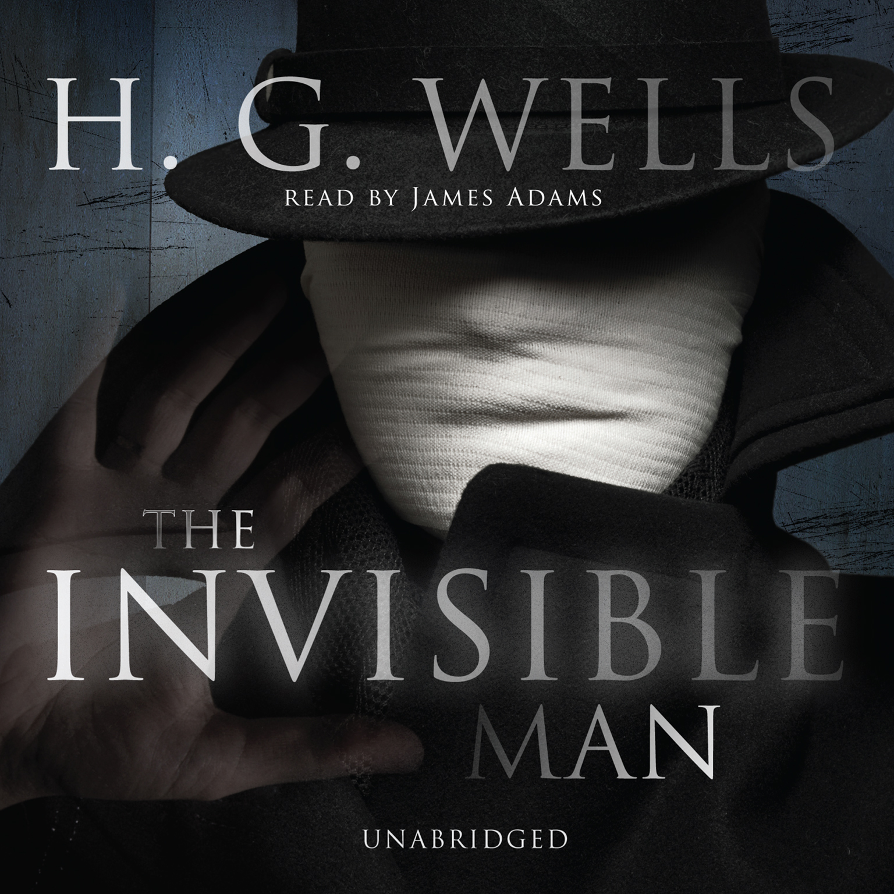
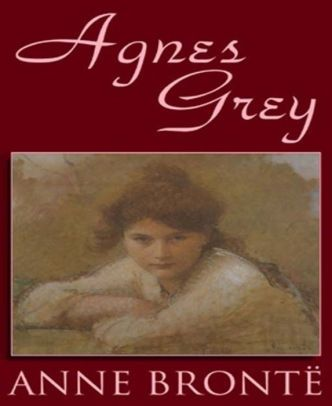
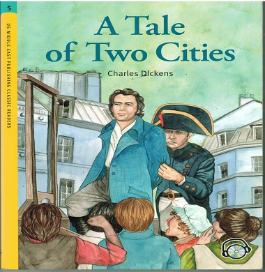
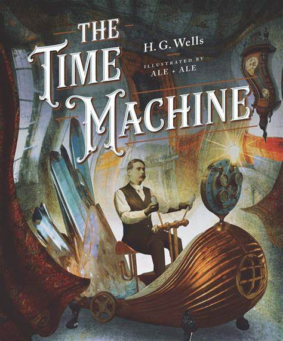
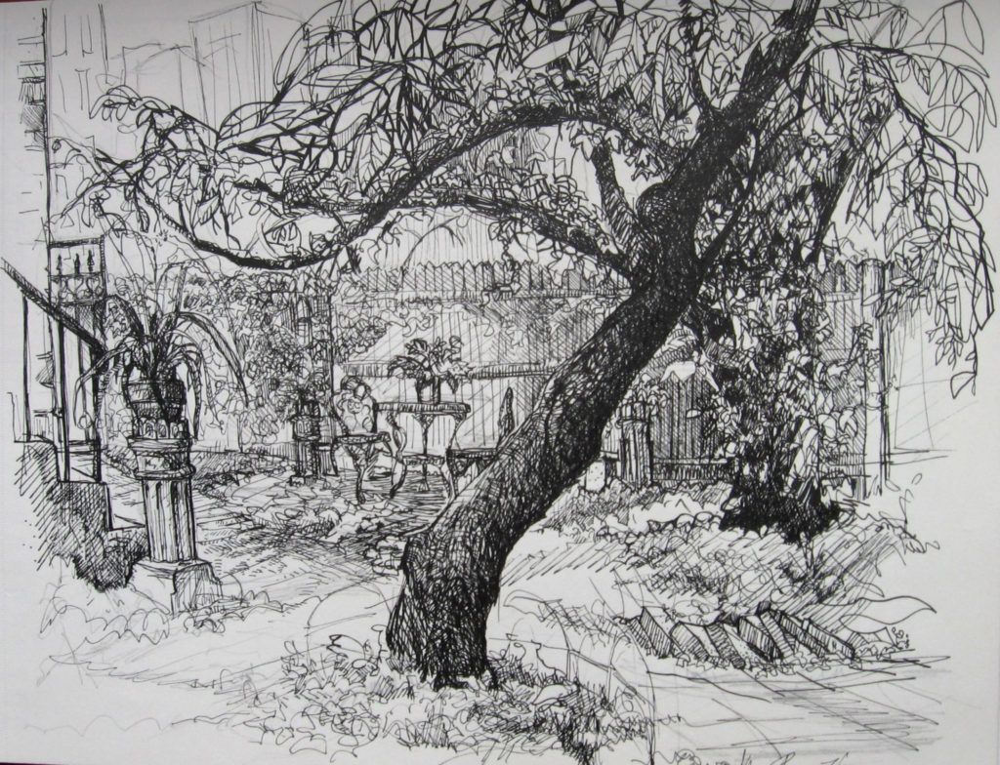
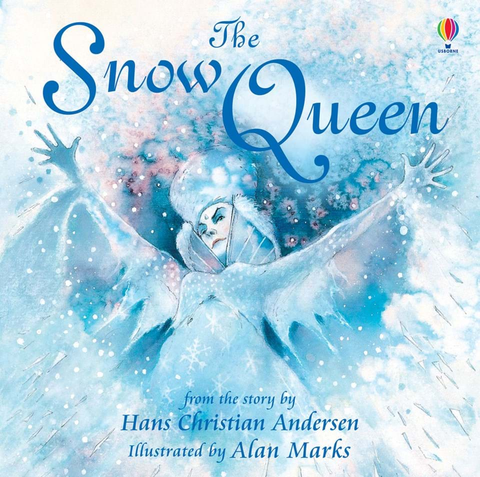
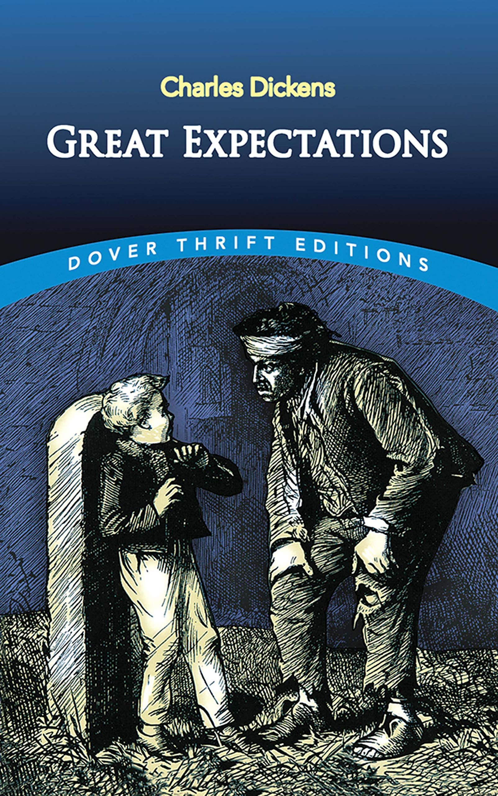
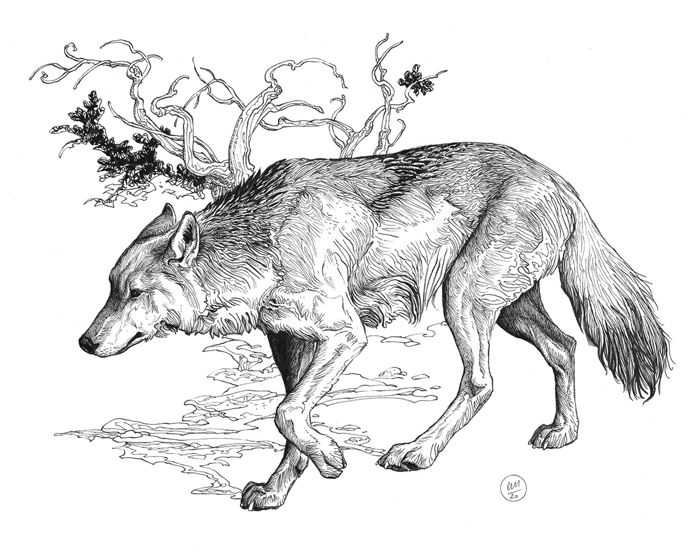
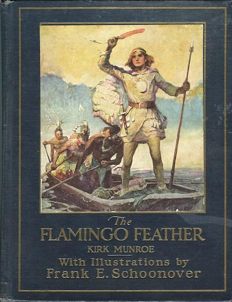
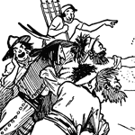

NOVEL
NOVEL

THE INVISIBLE MAN
H.G Wells
Chapter 1
The stranger came early in February, one wintry day, through a biting wind and a driving snow, the last snowfall of the year, over the down, walking as it seemed from Bramblehurst railway station, and carrying a little black portmanteau
in his thickly gloved hand. He was wrapped up from head to foot, and the brim of his soft felt hat hid every inch of his face but the shiny tip of his nose; the snow had piled itself against his shoulders and chest, and added a white
crest to the burden he carried. He staggered into the Coach and Horses, more dead than alive as it seemed, and flung his portmanteau down. "A fire," he cried, "in the name of human charity! A room and a fire!" He stamped and shook
the snow from off himself in the bar, and followed Mrs. Hall into her guest parlor to strike his bargain. And with that much introduction, that and a ready acquiescence to terms and a couple of sovereigns flung upon the table, he took
up his quarters in the inn.
Mrs. Hall lit the fire and left him there while she went to prepare him a meal with her own hands. A guest to stop at Iping in the wintertime was an unheard-of piece of luck, let alone a guest who was no "haggler," and she was
resolved to show herself worth of her good fortune. As soon as the bacon was well under way, and Millie, her lymphatic aid, had been brisked up a bit by a few deftly chosen expressions of contempt, she carried the cloth, plates, and
glasses into the parlour and began to lay them with the utmost eclat. Although the fire was burning up briskly, she was surprised to see that her visitor still wore his hat and coat, standing with his back to her and staring out of
the window at the falling snow in the yard. His gloved hands were clasped behind him, and he seemed to be lost in thought. She noticed that the melting snow that still sprinkled his shoulders dropped upon her carpet. "Can I take your
hat and coat, sir?" she said, "and give them a good dry in the kitchen?"
"No," he said without turning.
She was not sure she had heard him, and was about to repeat her question.
He turned his head and looked at her over his shoulder. "I prefer to keep them on," he said with emphasis, and she noticed that he wore big blue spectacles with sidelights, and had a bush side-whisker over his coat-collar that
completely hid his cheeks and face.
"Very well, sir," she said. "As you like. In a bit the room will be warmer."
He made no answer, and had turned his face away from her again, and Mrs. Hall, feeling that her conversational advances were ill-timed, laid the rest of the table things in a quick staccato and whisked out of the room. When she
returned he was still standing there, like a man of stone, his back hunched, his collar turned up, his dripping hat-brim turned down, hiding his face and ears completely. She put down the eggs and bacon with considerable emphasis,
and called rather than said to him, "Your lunch is served, sir."
"Thank you," he said at the same time, and did not stir until she was closing the door. Then he swung round and approached the table with a certain eager quickness.
As she went behind the bar to the kitchen she heard a sound repeated at regular intervals. Chirk, chirk, chirk, it went, the sound of a spoon being rapidly whisked round a basin. "That girl!" she said. "There! I clean forgot it.
It’s her being so long!" And while she herself finished mixing the mustard, she gave Millie a few verbal stabs for her excessive slowness. She had cooked the ham and eggs, laid the table, and done everything, while Millie (help indeed!)
had only succeeded in delaying the mustard. And him a new guest and wanting to stay! Then she filled the mustard pot, and, putting it with a certain stateliness upon a gold and black tea-tray, carried it into the parlour.
She rapped and entered promptly. As she did so her visitor moved quickly, so that she got but a glimpse of a white object disappearing behind the table. It would seem he was picking something from the floor. She rapped down the
mustard pot on the table, and then she noticed the overcoat and hat had been taken off and put over a chair in front of the fire, and a pair of wet boots threatened rust to her steel fender. She went to these things resolutely. "I
suppose I may have them to dry now," she said in a voice that brooked no denial.
"Leave the hat," said her visitor, in a muffled voice, and turning she saw he had raised his head and was sitting and looking at her.
For a moment she stood gaping at him, too surprised to speak.
He held a white cloth -- it was a serviette he had brought with him -- over the lower part of his face, so that his mouth and jaws were completely hidden, and that was the reason of his muffled voice. But it was not that which
startled Mrs. Hall. It was the fact that all his forehead above his blue glasses was covered by a white bandage, and that another covered his ears, leaving not a scrap of his face exposed excepting only his pink, peaked nose. It was
bright, pink, and shiny just as it had been at first. He wore a dark-brown velvet jacket with a high, black, linen-lined collar turned up about his neck. The thick black hair, escaping as it could below and between the cross bandages,
projected in curious tails and horns, giving him the strangest appearance conceivable. This muffled and bandaged head was so unlike what she had anticipated, that for a moment she was rigid.
He did not remove the serviette, but remained holding it, as she saw now, with a brown gloved hand, and regarding her with his inscrutable blue glasses. "Leave the hat," he said, speaking very distinctly through the white cloth.
Her nerves began to recover from the shock they had received. She placed the hat on the chair again by the fire. "I don’t know, sir," she began, "that -- " and she stopped embarrassed.
"Thank you," he said drily, glancing from her to the door and then at her again.
"I’ll have them nicely dried, sir, at once," she said, and carried his clothes out of the room. She glanced at his white-swathed head and blue goggles again as she was going out of the door; but his napkin was still in front of
his face. She shivered a little as she closed the door behind her, and her face was eloquent of her surprise and perplexity. "I never," she whispered. "There!" She went quite softly to the kitchen, and was too preoccupied to ask Millie
what she was messing about with now, when she got there.
The visitor sat and listened to her retreating feet. He glanced inquiringly at the window before he removed his serviette, and resumed his meal. He took a mouthful, glanced suspiciously at the window, took another mouthful, then
rose and, taking the serviette in his hand, walked across the room and pulled the blind down to the top of the white muslin that obscured the lower panes. This left the room in a twilight. This done, he returned with an easier air
to the table and his meal.
"The poor soul’s had an accident or an opration or something," said Mrs. Hall. "What a turn them bandages did give me, to be sure!"
She put on some more coal, unfolded the clothes-horse, and extended the traveller’s coat upon this. "And they goggles! Why, he looked more like a divin’ helmet than a human man!" She hung his muffler on a corner of the horse.
"And holding that handkercher over his mouth all the time. Talkin’ through it! . . . Perhaps his mouth was hurt too -- maybe."
She turned round, as one who suddenly remembers. "Bless my soul alive!" she said, going off at a tangent; "ain’t you done them taters yet, Millie?"
When Mrs. Hall went to clear away the stranger’s lunch, her idea that his mouth must also have been cut or disfigured in the accident she supposed him to have suffered, was confirmed, for he was smoking a pipe, and all the time
that she was in the room he never loosened the silk muffler he had wrapped round the lower part of his face to put the mouthpiece to his lips. Yet it was not forgetfulness, for she saw he glanced at it as it smouldered out. He sat
in the corner with his back to the window-blind and spoke now, having eaten and drunk and being comfortably warmed through, with less aggressive brevity than before. The reflection of the fire lent a kind of red animation to his big
spectacles they had lacked hitherto.
"I have some luggage, " he said, "at Bramblehurst station," and he asked her how he could have it sent. He bowed his bandaged head quite politely in acknowledgement of her explanation. "To-morrow?" he said. "There is no speedier
delivery?" and seemed quite disappointed when she answered, "No." Was she quite sure? No man with a trap who would go over?
Mrs. Hall, nothing loath, answered his questions and developed a conversation. "It’s a steep road by the down, sir," she said in answer to the question about a trap; and then, snatching at an opening, said, "It was there a carriage
was upsettled, a year ago and more. A gentleman killed, besides his coachman. Accidents, sir, happen in a moment, don’t they?"
But the visitor was not to be drawn so easily. "They do," he said through his muffler, eyeing her quietly through his impenetrable glasses.
"But they take long enough to get well, don’t they? . . . There was my sister’s son, Tom, jest cut his arm with a scythe, tumbled on it in the ’ayfield, and, bless me! he was three months tied up sir. You’d hardly believe it.
It’s regular given me a dread of a scythe, sir."
"I can quite understand that," said the visitor.
"He was afraid, one time, that he’d have to have an opration -- he was that bad, sir."
The visitor laughed abruptly, a bark of a laugh that he seemed to bite and kill in his mouth. "Was he?" he said.
"He was, sir. And no laughing matter to them as had the doing for him, as I had -- my sister being took up with her little ones so much. There was bandages to do, sir, and bandages to undo. So that if I may make so bold as to
say it, sir -- "
"Will you get me some matches?" said the visitor, quite abruptly. "My pipe is out."
Mrs. Hall was pulled up suddenly. It was certainly rude of him, after telling him all she had done. She gasped at him for a moment, and remembered the two sovereigns. She went for the matches.
"Thanks," he said concisely, as she put them down, and turned his shoulder upon her and stared out of the window again. It was altogether too discouraging. Evidently he was sensitive on the topic of operations and bandages. She
did not "make so bold as to say," however, after all. But his snubbing way had irritated her, and Millie had a hot time of it that afternoon.
The visitor remained in the parlour until four o’clock, without giving the ghost of an excuse for an intrusion. For the most part he was quite still during that time; it would seem he sat in the growing darkness in the firelight,
perhaps dozing.
Once or twice a curious listener might have heard him at the coals, and for the space of five minutes he was audible pacing the room. He seemed to be talking to himself. Then the armchair creaked as he sat down
again.
Click here to buy the book
Agnes Grey
Anne Brontë
Chapter 1: THE PARSONAGE
All true histories contain instruction; though, in some, the treasure may be hard to find, and when found, so trivial in quantity, that the dry, shrivelled kernel scarcely compensates for the trouble of cracking the nut. Whether this be
the case with my history or not, I am hardly competent to judge. I sometimes think it might prove useful to some, and entertaining to others; but the world may judge for itself. Shielded by my own obscurity, and by the lapse of years,
and a few fictitious names, I do not fear to venture; and will candidly lay before the public what I would not disclose to the most intimate friend.
My father was a clergyman of the north of England, who was deservedly respected
by all who knew him; and, in his younger days, lived pretty comfortably on the joint income of a small incumbency and a snug little property of his own. My mother, who married him against the wishes of her friends, was a squire’s daughter,
and a woman of spirit. In vain it was represented to her, that if she became the poor parson’s wife, she must relinquish her carriage and her lady’s–maid, and all the luxuries and elegancies of affluence; which to her were little less
than the necessaries of life. A carriage and a lady’s–maid were great conveniences; but, thank heaven, she had feet to carry her, and hands to minister to her own necessities. An elegant house and spacious grounds were not to be despised;
but she would rather live in a cottage with Richard Grey than in a palace with any other man in the world.
Finding arguments of no avail, her father, at length, told the lovers they might marry if they pleased; but, in so doing,
his daughter would forfeit every fraction of her fortune. He expected this would cool the ardour of both; but he was mistaken. My father knew too well my mother’s superior worth not to be sensible that she was a valuable fortune in
herself: and if she would but consent to embellish his humble hearth he should be happy to take her on any terms; while she, on her part, would rather labour with her own hands than be divided from the man she loved, whose happiness
it would be her joy to make, and who was already one with her in heart and soul. So her fortune went to swell the purse of a wiser sister, who had married a rich nabob; and she, to the wonder and compassionate regret of all who knew
her, went to bury herself in the homely village parsonage among the hills of —. And yet, in spite of all this, and in spite of my mother’s high spirit and my father’s whims, I believe you might search all England through, and fail
to find a happier couple.
Of six children, my sister Mary and myself were the only two that survived the perils of infancy and early childhood. I, being the younger by five or six years, was always regarded as THE child, and the
pet of the family: father, mother, and sister, all combined to spoil me—not by foolish indulgence, to render me fractious and ungovernable, but by ceaseless kindness, to make me too helpless and dependent—too unfit for buffeting with
the cares and turmoils of life.
Mary and I were brought up in the strictest seclusion. My mother, being at once highly accomplished, well informed, and fond of employment, took the whole charge of our education on herself, with
the exception of Latin—which my father undertook to teach us—so that we never even went to school; and, as there was no society in the neighbourhood, our only intercourse with the world consisted in a stately tea–party, now and then,
with the principal farmers and tradespeople of the vicinity (just to avoid being stigmatized as too proud to consort with our neighbours), and an annual visit to our paternal grandfather’s; where himself, our kind grandmamma, a maiden
aunt, and two or three elderly ladies and gentlemen, were the only persons we ever saw. Sometimes our mother would amuse us with stories and anecdotes of her younger days, which, while they entertained us amazingly, frequently awoke—in
ME, at least—a secret wish to see a little more of the world.
I thought she must have been very happy: but she never seemed to regret past times. My father, however, whose temper was neither tranquil nor cheerful by nature, often unduly vexed himself with thinking of the sacrifices his dear
wife had made for him; and troubled his head with revolving endless schemes for the augmentation of his little fortune, for her sake and ours. In vain my mother assured him she was quite satisfied; and if he would but lay by a little
for the children, we should all have plenty, both for time present and to come: but saving was not my father’s forte. He would not run in debt (at least, my mother took good care he should not), but while he had money he must spend
it: he liked to see his house comfortable, and his wife and daughters well clothed, and well attended; and besides, he was charitably disposed, and liked to give to the poor, according to his means: or, as some might think, beyond
them.
At length, however, a kind friend suggested to him a means of doubling his private property at one stroke; and further increasing it, hereafter, to an untold amount. This friend was a merchant, a man of enterprising spirit and
undoubted talent, who was somewhat straitened in his mercantile pursuits for want of capital; but generously proposed to give my father a fair share of his profits, if he would only entrust him with what he could spare; and he thought
he might safely promise that whatever sum the latter chose to put into his hands, it should bring him in cent. per cent. The small patrimony was speedily sold, and the whole of its price was deposited in the hands of the friendly merchant;
who as promptly proceeded to ship his cargo, and prepare for his voyage.
My father was delighted, so were we all, with our brightening prospects. For the present, it is true, we were reduced to the narrow income of the curacy;
but my father seemed to think there was no necessity for scrupulously restricting our expenditure to that; so, with a standing bill at Mr. Jackson’s, another at Smith’s, and a third at Hobson’s, we got along even more comfortably than
before: though my mother affirmed we had better keep within bounds, for our prospects of wealth were but precarious, after all; and if my father would only trust everything to her management, he should never feel himself stinted: but
he, for once, was incorrigible.
What happy hours Mary and I have passed while sitting at our work by the fire, or wandering on the heath–clad hills, or idling under the weeping birch (the only considerable tree in the garden),
talking of future happiness to ourselves and our parents, of what we would do, and see, and possess; with no firmer foundation for our goodly superstructure than the riches that were expected to flow in upon us from the success of
the worthy merchant’s speculations. Our father was nearly as bad as ourselves; only that he affected not to be so much in earnest: expressing his bright hopes and sanguine expectations in jests and playful sallies, that always struck
me as being exceedingly witty and pleasant. Our mother laughed with delight to see him so hopeful and happy: but still she feared he was setting his heart too much upon the matter; and once I heard her whisper as she left the room,
‘God grant he be not disappointed! I know not how he would bear it.’
Disappointed he was; and bitterly, too. It came like a thunder–clap on us all, that the vessel which contained our fortune had been wrecked, and gone to the bottom
with all its stores, together with several of the crew, and the unfortunate merchant himself. I was grieved for him; I was grieved for the overthrow of all our air–built castles: but, with the elasticity of youth, I soon recovered
the shook.
Though riches had charms, poverty had no terrors for an inexperienced girl like me. Indeed, to say the truth, there was something exhilarating in the idea of being driven to straits, and thrown upon our own resources.
I only wished papa, mamma, and Mary were all of the same mind as myself; and then, instead of lamenting past calamities we might all cheerfully set to work to remedy them; and the greater the difficulties, the harder our present privations,
the greater should be our cheerfulness to endure the latter, and our vigour to contend against the former.
Mary did not lament, but she brooded continually over the misfortune, and sank into a state of dejection from which no effort
of mine could rouse her. I could not possibly bring her to regard the matter on its bright side as I did: and indeed I was so fearful of being charged with childish frivolity, or stupid insensibility, that I carefully kept most of
my bright ideas and cheering notions to myself; well knowing they could not be appreciated.
My mother thought only of consoling my father, and paying our debts and retrenching our expenditure by every available means; but my father
was completely overwhelmed by the calamity: health, strength, and spirits sank beneath the blow, and he never wholly recovered them. In vain my mother strove to cheer him, by appealing to his piety, to his courage, to his affection
for herself and us. That very affection was his greatest torment: it was for our sakes he had so ardently longed to increase his fortune—it was our interest that had lent such brightness to his hopes, and that imparted such bitterness
to his present distress. He now tormented himself with remorse at having neglected my mother’s advice; which would at least have saved him from the additional burden of debt—he vainly reproached himself for having brought her from
the dignity, the ease, the luxury of her former station to toil with him through the cares and toils of poverty. It was gall and wormwood to his soul to see that splendid, highly–accomplished woman, once so courted and admired, transformed
into an active managing housewife, with hands and head continually occupied with household labours and household economy. The very willingness with which she performed these duties, the cheerfulness with which she bore her reverses,
and the kindness which withheld her from imputing the smallest blame to him, were all perverted by this ingenious self–tormentor into further aggravations of his sufferings. And thus the mind preyed upon the body, and disordered the
system of the nerves, and they in turn increased the troubles of the mind, till by action and reaction his health was seriously impaired; and not one of us could convince him that the aspect of our affairs was not half so gloomy, so
utterly hopeless, as his morbid imagination represented it to be.
The useful pony phaeton was sold, together with the stout, well–fed pony—the old favourite that we had fully determined should end its days in peace, and never pass
from our hands; the little coach–house and stable were let; the servant boy, and the more efficient (being the more expensive) of the two maid–servants, were dismissed. Our clothes were mended, turned, and darned to the utmost verge
of decency; our food, always plain, was now simplified to an unprecedented degree—except my father’s favourite dishes; our coals and candles were painfully economized—the pair of candles reduced to one, and that most sparingly used;
the coals carefully husbanded in the half–empty grate: especially when my father was out on his parish duties, or confined to bed through illness—then we sat with our feet on the fender, scraping the perishing embers together from
time to time, and occasionally adding a slight scattering of the dust and fragments of coal, just to keep them alive. As for our carpets, they in time were worn threadbare, and patched and darned even to a greater extent than our garments.
To save the expense of a gardener, Mary and I undertook to keep the garden in order; and all the cooking and household work that could not easily be managed by one servant–girl, was done by my mother and sister, with a little occasional
help from me: only a little, because, though a woman in my own estimation, I was still a child in theirs; and my mother, like most active, managing women, was not gifted with very active daughters: for this reason—that being so clever
and diligent herself, she was never tempted to trust her affairs to a deputy, but, on the contrary, was willing to act and think for others as well as for number one; and whatever was the business in hand, she was apt to think that
no one could do it so well as herself: so that whenever I offered to assist her, I received such an answer as—’No, love, you cannot indeed—there’s nothing here you can do. Go and help your sister, or get her to take a walk with you—tell
her she must not sit so much, and stay so constantly in the house as she does— she may well look thin and dejected.’
‘Mary, mamma says I’m to help you; or get you to take a walk with me; she says you may well look thin and dejected,
if you sit so constantly in the house.’
‘Help me you cannot, Agnes; and I cannot go out with YOU—I have far too much to do.’
‘Then let me help you.’
‘You cannot, indeed, dear child. Go and practise your music, or play with
the kitten.’
There was always plenty of sewing on hand; but I had not been taught to cut out a single garment, and except plain hemming and seaming, there was little I could do, even in that line; for they both asserted that it
was far easier to do the work themselves than to prepare it for me: and besides, they liked better to see me prosecuting my studies, or amusing myself—it was time enough for me to sit bending over my work, like a grave matron, when
my favourite little pussy was become a steady old cat. Under such circumstances, although I was not many degrees more useful than the kitten, my idleness was not entirely without excuse.
Through all our troubles, I never but once
heard my mother complain of our want of money. As summer was coming on she observed to Mary and me, ‘What a desirable thing it would be for your papa to spend a few weeks at a watering–place. I am convinced the sea–air and the change
of scene would be of incalculable service to him. But then, you see, there’s no money,’ she added, with a sigh. We both wished exceedingly that the thing might be done, and lamented greatly that it could not. ‘Well, well!’ said she,
‘it’s no use complaining. Possibly something might be done to further the project after all. Mary, you are a beautiful drawer. What do you say to doing a few more pictures in your best style, and getting them framed, with the water–coloured
drawings you have already done, and trying to dispose of them to some liberal picture–dealer, who has the sense to discern their merits?’
‘Mamma, I should be delighted if you think they COULD be sold; and for anything worth while.’
‘It’s worth while trying, however, my dear: do you procure the drawings, and I’ll endeavour to find a purchaser.’
‘I wish _I_ could do something,’ said I.
‘You, Agnes! well, who knows? You draw pretty well, too: if you choose some simple piece for your subject, I daresay you will be able to produce something we shall all be proud to exhibit.’
‘But I have another scheme in my
head, mamma, and have had long, only I did not like to mention it.’
‘Indeed! pray tell us what it is.’
‘I should like to be a governess.’
My mother uttered an exclamation of surprise, and laughed. My sister dropped her
work in astonishment, exclaiming, ‘YOU a governess, Agnes! What can you be dreaming of?’
‘Well! I don’t see anything so VERY extraordinary in it. I do not pretend to be able to instruct great girls; but surely I could teach little
ones: and I should like it so much: I am so fond of children. Do let me, mamma!’
‘But, my love, you have not learned to take care of YOURSELF yet: and young children require more judgment and experience to manage than elder ones.’
‘But, mamma, I am above eighteen, and quite able to take care of myself, and others too. You do not know half the wisdom and prudence I possess, because I have never been tried.’ ‘Only think,’ said Mary, ‘what would you do in a house
full of strangers, without me or mamma to speak and act for you—with a parcel of children, besides yourself, to attend to; and no one to look to for advice? You would not even know what clothes to put on.’
‘You think, because I
always do as you bid me, I have no judgment of my own: but only try me—that is all I ask—and you shall see what I can do.’
At that moment my father entered and the subject of our discussion was explained to him.
‘What, my little
Agnes a governess!’ cried he, and, in spite of his dejection, he laughed at the idea.
‘Yes, papa, don’t YOU say anything against it: I should like it so much; and I am sure I could manage delightfully.’
‘But, my darling, we
could not spare you.’ And a tear glistened in his eye as he added—’No, no! afflicted as we are, surely we are not brought to that pass yet.’
‘Oh, no!’ said my mother. ‘There is no necessity whatever for such a step; it is merely
a whim of her own. So you must hold your tongue, you naughty girl; for, though you are so ready to leave us, you know very well we cannot part with YOU.’
I was silenced for that day, and for many succeeding ones; but still I did
not wholly relinquish my darling scheme. Mary got her drawing materials, and steadily set to work. I got mine too; but while I drew, I thought of other things. How delightful it would be to be a governess! To go out into the world;
to enter upon a new life; to act for myself; to exercise my unused faculties; to try my unknown powers; to earn my own maintenance, and something to comfort and help my father, mother, and sister, besides exonerating them from the
provision of my food and clothing; to show papa what his little Agnes could do; to convince mamma and Mary that I was not quite the helpless, thoughtless being they supposed. And then, how charming to be entrusted with the care and
education of children! Whatever others said, I felt I was fully competent to the task: the clear remembrance of my own thoughts in early childhood would be a surer guide than the instructions of the most mature adviser. I had but to
turn from my little pupils to myself at their age, and I should know, at once, how to win their confidence and affections: how to waken the contrition of the erring; how to embolden the timid and console the afflicted; how to make
Virtue practicable, Instruction desirable, and Religion lovely and comprehensible.
– Delightful task! To teach the young idea how to shoot!
To train the tender plants, and watch their buds unfolding day by day!
Influenced
by so many inducements, I determined still to persevere; though the fear of displeasing my mother, or distressing my father’s feelings, prevented me from resuming the subject for several days. At length, again, I mentioned it to my
mother in private; and, with some difficulty, got her to promise to assist me with her endeavours. My father’s reluctant consent was next obtained, and then, though Mary still sighed her disapproval, my dear, kind mother began to look
out for a situation for me. She wrote to my father’s relations, and consulted the newspaper advertisements—her own relations she had long dropped all communication with: a formal interchange of occasional letters was all she had ever
had since her marriage, and she would not at any time have applied to them in a case of this nature. But so long and so entire had been my parents’ seclusion from the world, that many weeks elapsed before a suitable situation could
be procured. At last, to my great joy, it was decreed that I should take charge of the young family of a certain Mrs. Bloomfield; whom my kind, prim aunt Grey had known in her youth, and asserted to be a very nice woman. Her husband
was a retired tradesman, who had realized a very comfortable fortune; but could not be prevailed upon to give a greater salary than twenty–five pounds to the instructress of his children. I, however, was glad to accept this, rather
than refuse the situation—which my parents were inclined to think the better plan.
But some weeks more were yet to be devoted to preparation. How long, how tedious those weeks appeared to me! Yet they were happy ones in the main—full
of bright hopes and ardent expectations. With what peculiar pleasure I assisted at the making of my new clothes, and, subsequently, the packing of my trunks! But there was a feeling of bitterness mingling with the latter occupation
too; and when it was done—when all was ready for my departure on the morrow, and the last night at home approached—a sudden anguish seemed to swell my heart. My dear friends looked so sad, and spoke so very kindly, that I could scarcely
keep my eyes from overflowing: but I still affected to be gay. I had taken my last ramble with Mary on the moors, my last walk in the garden, and round the house; I had fed, with her, our pet pigeons for the last time—the pretty creatures
that we had tamed to peck their food from our hands: I had given a farewell stroke to all their silky backs as they crowded in my lap. I had tenderly kissed my own peculiar favourites, the pair of snow–white fantails; I had played
my last tune on the old familiar piano, and sung my last song to papa: not the last, I hoped, but the last for what appeared to me a very long time. And, perhaps, when I did these things again it would be with different feelings: circumstances
might be changed, and this house might never be my settled home again. My dear little friend, the kitten, would certainly be changed: she was already growing a fine cat; and when I returned, even for a hasty visit at Christmas, would,
most likely, have forgotten both her playmate and her merry pranks. I had romped with her for the last time; and when I stroked her soft bright fur, while she lay purring herself to sleep in my lap, it was with a feeling of sadness
I could not easily disguise. Then at bed–time, when I retired with Mary to our quiet little chamber, where already my drawers were cleared out and my share of the bookcase was empty—and where, hereafter, she would have to sleep alone,
in dreary solitude, as she expressed it—my heart sank more than ever: I felt as if I had been selfish and wrong to persist in leaving her; and when I knelt once more beside our little bed, I prayed for a blessing on her and on my parents
more fervently than ever I had done before. To conceal my emotion, I buried my face in my hands, and they were presently bathed in tears. I perceived, on rising, that she had been crying too: but neither of us spoke; and in silence
we betook ourselves to our repose, creeping more closely together from the consciousness that we were to part so soon.
But the morning brought a renewal of hope and spirits. I was to depart early; that the conveyance which took
me (a gig, hired from Mr. Smith, the draper, grocer, and tea–dealer of the village) might return the same day. I rose, washed, dressed, swallowed a hasty breakfast, received the fond embraces of my father, mother, and sister, kissed
the cat—to the great scandal of Sally, the maid— shook hands with her, mounted the gig, drew my veil over my face, and then, but not till then, burst into a flood of tears. The gig rolled on; I looked back; my dear mother and sister
were still standing at the door, looking after me, and waving their adieux. I returned their salute, and prayed God to bless them from my heart: we descended the hill, and I could see them no more.
‘It’s a coldish mornin’ for you,
Miss Agnes,’ observed Smith; ‘and a darksome ‘un too; but we’s happen get to yon spot afore there come much rain to signify.’
‘Yes, I hope so,’ replied I, as calmly as I could.
‘It’s comed a good sup last night too.’
‘Yes.’
‘But this cold wind will happen keep it off.’
‘Perhaps it will.’
Here ended our colloquy. We crossed the valley, and began to ascend the opposite hill. As we were toiling up, I looked back again; there was the village
spire, and the old grey parsonage beyond it, basking in a slanting beam of sunshine—it was but a sickly ray, but the village and surrounding hills were all in sombre shade, and I hailed the wandering beam as a propitious omen to my
home. With clasped hands I fervently implored a blessing on its inhabitants, and hastily turned away; for I saw the sunshine was departing; and I carefully avoided another glance, lest I should see it in gloomy shadow, like the rest
of the landscape.
Click here to buy the book
A Tale of Two Cities
Charles Dickens
BOOK THE FIRST: RECALLED TO LIFE—CHAPTER 1: THE PERIOD
It was the best of times, it was the worst of times, it was the age of wisdom, it was the age of foolishness, it was the epoch of belief, it was the epoch of incredulity, it was the season of Light, it was the season of Darkness, it was
the spring of hope, it was the winter of despair, we had everything before us, we had nothing before us, we were all going direct to Heaven, we were all going direct the other way—in short, the period was so far like the present period,
that some of its noisiest authorities insisted on its being received, for good or for evil, in the superlative degree of comparison only.
There were a king with a large jaw and a queen with a plain face, on the throne of England;
there were a king with a large jaw and a queen with a fair face, on the throne of France. In both countries it was clearer than crystal to the lords of the State preserves of loaves and fishes, that things in general were settled for
ever.
It was the year of Our Lord one thousand seven hundred and seventy-five. Spiritual revelations were conceded to England at that favoured period, as at this. Mrs. Southcott had recently attained her five-and-twentieth blessed birthday,
of whom a prophetic private in the Life Guards had heralded the sublime appearance by announcing that arrangements were made for the swallowing up of London and Westminster. Even the Cock-lane ghost had been laid only a round dozen
of years, after rapping out its messages, as the spirits of this very year last past (supernaturally deficient in originality) rapped out theirs. Mere messages in the earthly order of events had lately come to the English Crown and
People, from a congress of British subjects in America: which, strange to relate, have proved more important to the human race than any communications yet received through any of the chickens of the Cock-lane brood.
France, less
favoured on the whole as to matters spiritual than her sister of the shield and trident, rolled with exceeding smoothness down hill, making paper money and spending it. Under the guidance of her Christian pastors, she entertained herself,
besides, with such humane achievements as sentencing a youth to have his hands cut off, his tongue torn out with pincers, and his body burned alive, because he had not kneeled down in the rain to do honour to a dirty procession of
monks which passed within his view, at a distance of some fifty or sixty yards. It is likely enough that, rooted in the woods of France and Norway, there were growing trees, when that sufferer was put to death, already marked by the
Woodman, Fate, to come down and be sawn into boards, to make a certain movable framework with a sack and a knife in it, terrible in history. It is likely enough that in the rough outhouses of some tillers of the heavy lands adjacent
to Paris, there were sheltered from the weather that very day, rude carts, bespattered with rustic mire, snuffed about by pigs, and roosted in by poultry, which the Farmer, Death, had already set apart to be his tumbrils of the Revolution.
But that Woodman and that Farmer, though they work unceasingly, work silently, and no one heard them as they went about with muffled tread: the rather, forasmuch as to entertain any suspicion that they were awake, was to be atheistical
and traitorous.
In England, there was scarcely an amount of order and protection to justify much national boasting. Daring burglaries by armed men, and highway robberies, took place in the capital itself every night; families were
publicly cautioned not to go out of town without removing their furniture to upholsterers’ warehouses for security; the highwayman in the dark was a City tradesman in the light, and, being recognised and challenged by his fellow- tradesman
whom he stopped in his character of “the Captain,” gallantly shot him through the head and rode away; the mall was waylaid by seven robbers, and the guard shot three dead, and then got shot dead himself by the other four, “in consequence
of the failure of his ammunition:” after which the mall was robbed in peace; that magnificent potentate, the Lord Mayor of London, was made to stand and deliver on Turnham Green, by one highwayman, who despoiled the illustrious creature
in sight of all his retinue; prisoners in London gaols fought battles with their turnkeys, and the majesty of the law fired blunderbusses in among them, loaded with rounds of shot and ball; thieves snipped off diamond crosses from
the necks of noble lords at Court drawing-rooms; musketeers went into St. Giles’s, to search for contraband goods, and the mob fired on the musketeers, and the musketeers fired on the mob, and nobody thought any of these occurrences
much out of the common way. In the midst of them, the hangman, ever busy and ever worse than useless, was in constant requisition; now, stringing up long rows of miscellaneous criminals; now, hanging a housebreaker on Saturday who
had been taken on Tuesday; now, burning people in the hand at Newgate by the dozen, and now burning pamphlets at the door of Westminster Hall; to-day, taking the life of an atrocious murderer, and to-morrow of a wretched pilferer who
had robbed a farmer’s boy of sixpence.
All these things, and a thousand like them, came to pass in and close upon the dear old year one thousand seven hundred and seventy-five. Environed by them, while the Woodman and the Farmer
worked unheeded, those two of the large jaws, and those other two of the plain and the fair faces, trod with stir enough, and carried their divine rights with a high hand. Thus did the year one thousand seven hundred and seventy-five
conduct their Greatnesses, and myriads of small creatures—the creatures of this chronicle among the rest—along the roads that lay before them.
Click here to buy the book
THE TIME MACHINE
H.G. Wells
Chapter 1
The Time Traveller (for so it will be convenient to speak of him) was expounding a recondite matter to us. His grey eyes shone and twinkled, and his usually pale face was flushed and animated. The fire burned brightly, and the soft radiance
of the incandescent lights in the lilies of silver caught the bubbles that flashed and passed in our glasses. Our chairs, being his patents, embraced and caressed us rather than submitted to be sat upon, and there was that luxurious
after–dinner atmosphere when thought roams gracefully free of the trammels of precision. And he put it to us in this way—marking the points with a lean forefinger—as we sat and lazily admired his earnestness over this new paradox (as
we thought it) and his fecundity.
'You must follow me carefully. I shall have to controvert one or two ideas that are almost universally accepted. The geometry, for instance, they taught you at school is founded on a misconception.'
'Is not that rather a large thing to expect us to begin upon?' said Filby, an argumentative person with red hair.
'I do not mean to ask you to accept anything without reasonable ground for it. You will soon admit as much as I need
from you. You know of course that a mathematical line, a line of thickness nil, has no real existence. They taught you that? Neither has a mathematical plane. These things are mere abstractions.'
'That is all right,' said the Psychologist.
'Nor, having only length, breadth, and thickness, can a cube have a real existence.'
'There I object,' said Filby. 'Of course a solid body may exist. All real things—'
'So most people think. But wait a moment. Can an instantaneous
cube exist?'
'Don't follow you,' said Filby.
'Can a cube that does not last for any time at all, have a real existence?'
Filby became pensive. 'Clearly,' the Time Traveller proceeded, 'any real body must have extension in four directions:
it must have Length, Breadth, Thickness, and—Duration. But through a natural infirmity of the flesh, which I will explain to you in a moment, we incline to overlook this fact. There are really four dimensions, three which we call the
three planes of Space, and a fourth, Time. There is, however, a tendency to draw an unreal distinction between the former three dimensions and the latter, because it happens that our consciousness moves intermittently in one direction
along the latter from the beginning to the end of our lives.'
'That,' said a very young man, making spasmodic efforts to relight his cigar over the lamp; 'that ... very clear indeed.'
'Now, it is very remarkable that this is
so extensively overlooked,' continued the Time Traveller, with a slight accession of cheerfulness. 'Really this is what is meant by the Fourth Dimension, though some people who talk about the Fourth Dimension do not know they mean
it. It is only another way of looking at Time. There is no difference between Time and any of the three dimensions of Space except that our consciousness moves along it. But some foolish people have got hold of the wrong side of that
idea. You have all heard what they have to say about this Fourth Dimension?'
'I have not,' said the Provincial Mayor.
'It is simply this. That Space, as our mathematicians have it, is spoken of as having three dimensions, which
one may call Length, Breadth, and Thickness, and is always definable by reference to three planes, each at right angles to the others. But some philosophical people have been asking why three dimensions particularly—why not another
direction at right angles to the other three?—and have even tried to construct a Four–Dimension geometry. Professor Simon Newcomb was expounding this to the New York Mathematical Society only a month or so ago. You know how on a flat
surface, which has only two dimensions, we can represent a figure of a three–dimensional solid, and similarly they think that by models of three dimensions they could represent one of four—if they could master the perspective of the
thing. See?'
'I think so,' murmured the Provincial Mayor; and, knitting his brows, he lapsed into an introspective state, his lips moving as one who repeats mystic words. 'Yes, I think I see it now,' he said after some time, brightening
in a quite transitory manner.
'Well, I do not mind telling you I have been at work upon this geometry of Four Dimensions for some time. Some of my results are curious. For instance, here is a portrait of a man at eight years old,
another at fifteen, another at seventeen, another at twenty–three, and so on. All these are evidently sections, as it were, Three–Dimensional representations of his Four–Dimensioned being, which is a fixed and unalterable thing.
'Scientific people,' proceeded the Time Traveller, after the pause required for the proper assimilation of this, 'know very well that Time is only a kind of Space. Here is a popular scientific diagram, a weather record. This line I
trace with my finger shows the movement of the barometer. Yesterday it was so high, yesterday night it fell, then this morning it rose again, and so gently upward to here. Surely the mercury did not trace this line in any of the dimensions
of Space generally recognized? But certainly it traced such a line, and that line, therefore, we must conclude was along the Time–Dimension.'
'But,' said the Medical Man, staring hard at a coal in the fire, 'if Time is really only
a fourth dimension of Space, why is it, and why has it always been, regarded as something different? And why cannot we move in Time as we move about in the other dimensions of Space?'
The Time Traveller smiled. 'Are you sure we
can move freely in Space? Right and left we can go, backward and forward freely enough, and men always have done so. I admit we move freely in two dimensions. But how about up and down? Gravitation limits us there.'
'Not exactly,'
said the Medical Man. 'There are balloons.'
'But before the balloons, save for spasmodic jumping and the inequalities of the surface, man had no freedom of vertical movement.'
'Still they could move a little up and down,' said
the Medical Man.
'Easier, far easier down than up.'
'And you cannot move at all in Time, you cannot get away from the present moment.'
'My dear sir, that is just where you are wrong. That is just where the whole world has
gone wrong. We are always getting away from the present moment. Our mental existences, which are immaterial and have no dimensions, are passing along the Time–Dimension with a uniform velocity from the cradle to the grave. Just as
we should travel down if we began our existence fifty miles above the earth's surface.'
'But the great difficulty is this,' interrupted the Psychologist. 'You can move about in all directions of Space, but you cannot move about in Time.'
'That is the germ of my great discovery. But you are wrong to say that we
cannot move about in Time. For instance, if I am recalling an incident very vividly I go back to the instant of its occurrence: I become absent–minded, as you say. I jump back for a moment. Of course we have no means of staying back
for any length of Time, any more than a savage or an animal has of staying six feet above the ground. But a civilized man is better off than the savage in this respect. He can go up against gravitation in a balloon, and why should
he not hope that ultimately he may be able to stop or accelerate his drift along the Time–Dimension, or even turn about and travel the other way?'
'Oh, this,' began Filby, 'is all—'
'Why not?' said the Time Traveller.
'It's
against reason,' said Filby.
'What reason?' said the Time Traveller.
'You can show black is white by argument,' said Filby, 'but you will never convince me.'
'Possibly not,' said the Time Traveller. 'But now you begin to
see the object of my investigations into the geometry of Four Dimensions. Long ago I had a vague inkling of a machine—'
'To travel through Time!' exclaimed the Very Young Man.
'That shall travel indifferently in any direction
of Space and Time, as the driver determines.'
Filby contented himself with laughter.
'But I have experimental verification,' said the Time Traveller.
'It would be remarkably convenient for the historian,' the Psychologist
suggested. 'One might travel back and verify the accepted account of the Battle of Hastings, for instance!'
'Don't you think you would attract attention?' said the Medical Man. 'Our ancestors had no great tolerance for anachronisms.'
'One might get one's Greek from the very lips of Homer and Plato,' the Very Young Man thought.
'In which case they would certainly plough you for the Little–go. The German scholars have improved Greek so much.'
'Then there
is the future,' said the Very Young Man. 'Just think! One might invest all one's money, leave it to accumulate at interest, and hurry on ahead!'
'To discover a society,' said I, 'erected on a strictly communistic basis.'
'Of
all the wild extravagant theories!' began the Psychologist.
'Yes, so it seemed to me, and so I never talked of it until—'
'Experimental verification!' cried I. 'You are going to verify that?'
'The experiment!' cried Filby,
who was getting brain–weary.
'Let's see your experiment anyhow,' said the Psychologist, 'though it's all humbug, you know.'
The Time Traveller smiled round at us. Then, still smiling faintly, and with his hands deep in his
trousers pockets, he walked slowly out of the room, and we heard his slippers shuffling down the long passage to his laboratory.
The Psychologist looked at us. 'I wonder what he's got?'
'Some sleight–of–hand trick or other,'
said the Medical Man, and Filby tried to tell us about a conjurer he had seen at Burslem; but before he had finished his preface the Time Traveller came back, and Filby's anecdote collapsed.
The thing the Time Traveller held in
his hand was a glittering metallic framework, scarcely larger than a small clock, and very delicately made. There was ivory in it, and some transparent crystalline substance. And now I must be explicit, for this that follows—unless
his explanation is to be accepted—is an absolutely unaccountable thing. He took one of the small octagonal tables that were scattered about the room, and set it in front of the fire, with two legs on the hearthrug. On this table he
placed the mechanism. Then he drew up a chair, and sat down. The only other object on the table was a small shaded lamp, the bright light of which fell upon the model. There were also perhaps a dozen candles about, two in brass candlesticks
upon the mantel and several in sconces, so that the room was brilliantly illuminated. I sat in a low arm–chair nearest the fire, and I drew this forward so as to be almost between the Time Traveller and the fireplace. Filby sat behind
him, looking over his shoulder. The Medical Man and the Provincial Mayor watched him in profile from the right, the Psychologist from the left. The Very Young Man stood behind the Psychologist. We were all on the alert. It appears
incredible to me that any kind of trick, however subtly conceived and however adroitly done, could have been played upon us under these conditions.
The Time Traveller looked at us, and then at the mechanism. 'Well?' said the Psychologist.
'This little affair,' said the Time Traveller, resting his elbows upon the table and pressing his hands together above the apparatus, 'is only a model. It is my plan for a machine to travel through time. You will notice that it looks
singularly askew, and that there is an odd twinkling appearance about this bar, as though it was in some way unreal.' He pointed to the part with his finger. 'Also, here is one little white lever, and here is another.'
The Medical
Man got up out of his chair and peered into the thing. 'It's beautifully made,' he said.
'It took two years to make,' retorted the Time Traveller. Then, when we had all imitated the action of the Medical Man, he said: 'Now I want
you clearly to understand that this lever, being pressed over, sends the machine gliding into the future, and this other reverses the motion. This saddle represents the seat of a time traveller. Presently I am going to press the lever,
and off the machine will go. It will vanish, pass into future Time, and disappear. Have a good look at the thing. Look at the table too, and satisfy yourselves there is no trickery. I don't want to waste this model, and then be told
I'm a quack.'
There was a minute's pause perhaps. The Psychologist seemed about to speak to me, but changed his mind. Then the Time Traveller put forth his finger towards the lever. 'No,' he said suddenly. 'Lend me your hand.'
And turning to the Psychologist, he took that individual's hand in his own and told him to put out his forefinger. So that it was the Psychologist himself who sent forth the model Time Machine on its interminable voyage. We all saw
the lever turn. I am absolutely certain there was no trickery. There was a breath of wind, and the lamp flame jumped. One of the candles on the mantel was blown out, and the little machine suddenly swung round, became indistinct, was
seen as a ghost for a second perhaps, as an eddy of faintly glittering brass and ivory; and it was gone—vanished! Save for the lamp the table was bare.
Everyone was silent for a minute. Then Filby said he was damned.
The Psychologist
recovered from his stupor, and suddenly looked under the table. At that the Time Traveller laughed cheerfully. 'Well?' he said, with a reminiscence of the Psychologist. Then, getting up, he went to the tobacco jar on the mantel, and
with his back to us began to fill his pipe.
We stared at each other. 'Look here,' said the Medical Man, 'are you in earnest about this? Do you seriously believe that that machine has travelled into time?'
'Certainly,' said
the Time Traveller, stooping to light a spill at the fire. Then he turned, lighting his pipe, to look at the Psychologist's face. (The Psychologist, to show that he was not unhinged, helped himself to a cigar and tried to light it
uncut.) 'What is more, I have a big machine nearly finished in there'—he indicated the laboratory—'and when that is put together I mean to have a journey on my own account.'
'You mean to say that that machine has travelled into
the future?' said Filby.
'Into the future or the past—I don't, for certain, know which.'
After an interval the Psychologist had an inspiration. 'It must have gone into the past if it has gone anywhere,' he said.
'Why?'
said the Time Traveller.
'Because I presume that it has not moved in space, and if it travelled into the future it would still be here all this time, since it must have travelled through this time.'
'But,' I said, 'If it travelled
into the past it would have been visible when we came first into this room; and last Thursday when we were here; and the Thursday before that; and so forth!'
'Serious objections,' remarked the Provincial Mayor, with an air of impartiality,
turning towards the Time Traveller.
'Not a bit,' said the Time Traveller, and, to the Psychologist: 'You think. You can explain that. It's presentation below the threshold, you know, diluted presentation.'
'Of course,' said
the Psychologist, and reassured us. 'That's a simple point of psychology. I should have thought of it. It's plain enough, and helps the paradox delightfully. We cannot see it, nor can we appreciate this machine, any more than we can
the spoke of a wheel spinning, or a bullet flying through the air. If it is travelling through time fifty times or a hundred times faster than we are, if it gets through a minute while we get through a second, the impression it creates
will of course be only one–fiftieth or one–hundredth of what it would make if it were not travelling in time. That's plain enough.' He passed his hand through the space in which the machine had been. 'You see?' he said, laughing.
We sat and stared at the vacant table for a minute or so. Then the Time Traveller asked us what we thought of it all.
'It sounds plausible enough to–night,' said the Medical Man; 'but wait until to–morrow. Wait for the common sense
of the morning.'
'Would you like to see the Time Machine itself?' asked the Time Traveller. And therewith, taking the lamp in his hand, he led the way down the long, draughty corridor to his laboratory. I remember vividly the flickering
light, his queer, broad head in silhouette, the dance of the shadows, how we all followed him, puzzled but incredulous, and how there in the laboratory we beheld a larger edition of the little mechanism which we had seen vanish from
before our eyes. Parts were of nickel, parts of ivory, parts had certainly been filed or sawn out of rock crystal. The thing was generally complete, but the twisted crystalline bars lay unfinished upon the bench beside some sheets
of drawings, and I took one up for a better look at it. Quartz it seemed to be.
'Look here,' said the Medical Man, 'are you perfectly serious? Or is this a trick—like that ghost you showed us last Christmas?'
'Upon that machine,'
said the Time Traveller, holding the lamp aloft, 'I intend to explore time. Is that plain? I was never more serious in my life.'
None of us quite knew how to take it.
I caught Filby's eye over the shoulder of the Medical Man,
and he winked at me solemnly.
Click here to buy the book
The Secret Garden
Frances Hodgson Burnett
CHAPTER 1: “THERE IS NO ONE LEFT”
When Mary Lennox was sent to Misselthwaite Manor to live with her uncle everybody said she was the most disagreeable-looking child ever seen. It was true, too. She had a little thin face and a little thin body, thin light hair and a sour
expression. Her hair was yellow, and her face was yellow because she had been born in India and had always been ill in one way or another. Her father had held a position under the English Government and had always been busy and ill
himself, and her mother had been a great beauty who cared only to go to parties and amuse herself with gay people. She had not wanted a little girl at all, and when Mary was born she handed her over to the care of an Ayah, who was
made to understand that if she wished to please the Mem Sahib she must keep the child out of sight as much as possible. So when she was a sickly, fretful, ugly little baby she was kept out of the way, and when she became a sickly,
fretful, toddling thing she was kept out of the way also. She never remembered seeing familiarly anything but the dark faces of her Ayah and the other native servants, and as they always obeyed her and gave her her own way in everything,
because the Mem Sahib would be angry if she was disturbed by her crying, by the time she was six years old she was as tyrannical and selfish a little pig as ever lived. The young English governess who came to teach her to read and
write disliked her so much that she gave up her place in three months, and when other governesses came to try to fill it they always went away in a shorter time than the first one. So if Mary had not chosen to really want to know how
to read books she would never have learned her letters at all.
One frightfully hot morning, when she was about nine years old, she awakened feeling very cross, and she became crosser still when she saw that the servant who stood
by her bedside was not her Ayah.
“Why did you come?” she said to the strange woman. “I will not let you stay. Send my Ayah to me.”
The woman looked frightened, but she only stammered that the Ayah could not come and when Mary
threw herself into a passion and beat and kicked her, she looked only more frightened and repeated that it was not possible for the Ayah to come to Missie Sahib.
There was something mysterious in the air that morning. Nothing was
done in its regular order and several of the native servants seemed missing, while those whom Mary saw slunk or hurried about with ashy and scared faces. But no one would tell her anything and her Ayah did not come. She was actually
left alone as the morning went on, and at last she wandered out into the garden and began to play by herself under a tree near the veranda. She pretended that she was making a flower-bed, and she stuck big scarlet hibiscus blossoms
into little heaps of earth, all the time growing more and more angry and muttering to herself the things she would say and the names she would call Saidie when she returned.
“Pig! Pig! Daughter of Pigs!” she said, because to call
a native a pig is the worst insult of all.
She was grinding her teeth and saying this over and over again when she heard her mother come out on the veranda with some one. She was with a fair young man and they stood talking together
in low strange voices. Mary knew the fair young man who looked like a boy. She had heard that he was a very young officer who had just come from England. The child stared at him, but she stared most at her mother. She always did this
when she had a chance to see her, because the Mem Sahib—Mary used to call her that oftener than anything else—was such a tall, slim, pretty person and wore such lovely clothes. Her hair was like curly silk and she had a delicate little
nose which seemed to be disdaining things, and she had large laughing eyes. All her clothes were thin and floating, and Mary said they were “full of lace.” They looked fuller of lace than ever this morning, but her eyes were not laughing
at all. They were large and scared and lifted imploringly to the fair boy officer’s face.
“Is it so very bad? Oh, is it?” Mary heard her say.
“Awfully,” the young man answered in a trembling voice. “Awfully, Mrs. Lennox. You
ought to have gone to the hills two weeks ago.”
The Mem Sahib wrung her hands.
“Oh, I know I ought!” she cried. “I only stayed to go to that silly dinner party. What a fool I was!”
At that very moment such a loud sound
of wailing broke out from the servants’ quarters that she clutched the young man’s arm, and Mary stood shivering from head to foot. The wailing grew wilder and wilder. “What is it? What is it?” Mrs. Lennox gasped.
“Some one has
died,” answered the boy officer. “You did not say it had broken out among your servants.”
“I did not know!” the Mem Sahib cried. “Come with me! Come with me!” and she turned and ran into the house.
After that, appalling things
happened, and the mysteriousness of the morning was explained to Mary. The cholera had broken out in its most fatal form and people were dying like flies. The Ayah had been taken ill in the night, and it was because she had just died
that the servants had wailed in the huts. Before the next day three other servants were dead and others had run away in terror. There was panic on every side, and dying people in all the bungalows.
During the confusion and bewilderment
of the second day Mary hid herself in the nursery and was forgotten by everyone. Nobody thought of her, nobody wanted her, and strange things happened of which she knew nothing. Mary alternately cried and slept through the hours. She
only knew that people were ill and that she heard mysterious and frightening sounds. Once she crept into the dining-room and found it empty, though a partly finished meal was on the table and chairs and plates looked as if they had
been hastily pushed back when the diners rose suddenly for some reason. The child ate some fruit and biscuits, and being thirsty she drank a glass of wine which stood nearly filled. It was sweet, and she did not know how strong it
was. Very soon it made her intensely drowsy, and she went back to her nursery and shut herself in again, frightened by cries she heard in the huts and by the hurrying sound of feet. The wine made her so sleepy that she could scarcely
keep her eyes open and she lay down on her bed and knew nothing more for a long time.
Many things happened during the hours in which she slept so heavily, but she was not disturbed by the wails and the sound of things being carried
in and out of the bungalow.
When she awakened she lay and stared at the wall. The house was perfectly still. She had never known it to be so silent before. She heard neither voices nor footsteps, and wondered if everybody had got
well of the cholera and all the trouble was over. She wondered also who would take care of her now her Ayah was dead. There would be a new Ayah, and perhaps she would know some new stories. Mary had been rather tired of the old ones.
She did not cry because her nurse had died. She was not an affectionate child and had never cared much for any one. The noise and hurrying about and wailing over the cholera had frightened her, and she had been angry because no one
seemed to remember that she was alive. Everyone was too panic-stricken to think of a little girl no one was fond of. When people had the cholera it seemed that they remembered nothing but themselves. But if everyone had got well again,
surely some one would remember and come to look for her.
But no one came, and as she lay waiting the house seemed to grow more and more silent. She heard something rustling on the matting and when she looked down she saw a little
snake gliding along and watching her with eyes like jewels. She was not frightened, because he was a harmless little thing who would not hurt her and he seemed in a hurry to get out of the room. He slipped under the door as she watched
him.
“How queer and quiet it is,” she said. “It sounds as if there were no one in the bungalow but me and the snake.”
Almost the next minute she heard footsteps in the compound, and then on the veranda. They were men’s footsteps,
and the men entered the bungalow and talked in low voices. No one went to meet or speak to them and they seemed to open doors and look into rooms. “What desolation!” she heard one voice say. “That pretty, pretty woman! I suppose the
child, too. I heard there was a child, though no one ever saw her.”
Mary was standing in the middle of the nursery when they opened the door a few minutes later. She looked an ugly, cross little thing and was frowning because she
was beginning to be hungry and feel disgracefully neglected. The first man who came in was a large officer she had once seen talking to her father. He looked tired and troubled, but when he saw her he was so startled that he almost
jumped back.
“Barney!” he cried out. “There is a child here! A child alone! In a place like this! Mercy on us, who is she!”
“I am Mary Lennox,” the little girl said, drawing herself up stiffly. She thought the man was very
rude to call her father’s bungalow “A place like this!” “I fell asleep when everyone had the cholera and I have only just wakened up. Why does nobody come?”
“It is the child no one ever saw!” exclaimed the man, turning to his companions.
“She has actually been forgotten!”
“Why was I forgotten?” Mary said, stamping her foot. “Why does nobody come?”
The young man whose name was Barney looked at her very sadly. Mary even thought she saw him wink his eyes as if
to wink tears away.
“Poor little kid!” he said. “There is nobody left to come.”
It was in that strange and sudden way that Mary found out that she had neither father nor mother left; that they had died and been carried away
in the night, and that the few native servants who had not died also had left the house as quickly as they could get out of it, none of them even remembering that there was a Missie Sahib. That was why the place was so quiet. It was
true that there was no one in the bungalow but herself and the little rustling snake.
Click here to buy the book
THE SNOW QUEEN
Hans Christian Andersen
FIRST STORY: WHICH TREATS OF A MIRROR AND OF THE SPLINTERS
Now then, let us begin. When we are at the end of the story, we shall know more than we know now: but to begin.
Once upon a time there was a wicked sprite, indeed he was the most mischievous of all sprites. One day he was in a very
good humor, for he had made a mirror with the power of causing all that was good and beautiful when it was reflected therein, to look poor and mean; but that which was good–for–nothing and looked ugly was shown magnified and increased
in ugliness. In this mirror the most beautiful landscapes looked like boiled spinach, and the best persons were turned into frights, or appeared to stand on their heads; their faces were so distorted that they were not to be recognised;
and if anyone had a mole, you might be sure that it would be magnified and spread over both nose and mouth.
"That's glorious fun!" said the sprite. If a good thought passed through a man's mind, then a grin was seen in the mirror,
and the sprite laughed heartily at his clever discovery. All the little sprites who went to his school—for he kept a sprite school—told each other that a miracle had happened; and that now only, as they thought, it would be possible
to see how the world really looked. They ran about with the mirror; and at last there was not a land or a person who was not represented distorted in the mirror. So then they thought they would fly up to the sky, and have a joke there.
The higher they flew with the mirror, the more terribly it grinned: they could hardly hold it fast. Higher and higher still they flew, nearer and nearer to the stars, when suddenly the mirror shook so terribly with grinning, that it
flew out of their hands and fell to the earth, where it was dashed in a hundred million and more pieces. And now it worked much more evil than before; for some of these pieces were hardly so large as a grain of sand, and they flew
about in the wide world, and when they got into people's eyes, there they stayed; and then people saw everything perverted, or only had an eye for that which was evil. This happened because the very smallest bit had the same power
which the whole mirror had possessed. Some persons even got a splinter in their heart, and then it made one shudder, for their heart became like a lump of ice. Some of the broken pieces were so large that they were used for windowpanes,
through which one could not see one's friends. Other pieces were put in spectacles; and that was a sad affair when people put on their glasses to see well and rightly. Then the wicked sprite laughed till he almost choked, for all this
tickled his fancy. The fine splinters still flew about in the air: and now we shall hear what happened next.
Click here to buy the book
GREAT EXPECTATIONS
Charles Dickens
CHAPTER 1
My father’s family name being Pirrip, and my Christian name Philip, my infant tongue could make of both names nothing longer or more explicit than Pip. So, I called myself Pip, and came to be called Pip.
I give Pirrip as my father’s
family name, on the authority of his tombstone and my sister — Mrs. Joe Gargery, who married the blacksmith. As I never saw my father or my mother, and never saw any likeness of either of them (for their days were long before the days
of photographs), my first fancies regarding what they were like, were unreasonably derived from their tombstones. The shape of the letters on my father’s, gave me an odd idea that he was a square, stout, dark man, with curly black
hair. From the character and turn of the inscription, “Also Georgiana Wife of the Above,” I drew a childish conclusion that my mother was freckled and sickly. To five little stone lozenges, each about a foot and a half long, which
were arranged in a neat row beside their grave, and were sacred to the memory of five little brothers of mine — who gave up trying to get a living, exceedingly early in that universal struggle — I am indebted for a belief I religiously
entertained that they had all been born on their backs with their hands in their trousers—pockets, and had never taken them out in this state of existence.
Ours was the marsh country, down by the river, within, as the river wound,
twenty miles of the sea. My first most vivid and broad impression of the identity of things, seems to me to have been gained on a memorable raw afternoon towards evening. At such a time I found out for certain, that this bleak place
overgrown with nettles was the churchyard; and that Philip Pirrip, late of this parish, and also Georgiana wife of the above, were dead and buried; and that Alexander, Bartholomew, Abraham, Tobias, and Roger, infant children of the
aforesaid, were also dead and buried; and that the dark flat wilderness beyond the churchyard, intersected with dykes and mounds and gates, with scattered cattle feeding on it, was the marshes; and that the low leaden line beyond,
was the river; and that the distant savage lair from which the wind was rushing, was the sea; and that the small bundle of shivers growing afraid of it all and beginning to cry, was Pip.
“Hold your noise!” cried a terrible voice,
as a man started up from among the graves at the side of the church porch. “Keep still, you little devil, or I’ll cut your throat!”
A fearful man, all in coarse grey, with a great iron on his leg. A man with no hat, and with broken
shoes, and with an old rag tied round his head. A man who had been soaked in water, and smothered in mud, and lamed by stones, and cut by flints, and stung by nettles, and torn by briars; who limped, and shivered, and glared and growled;
and whose teeth chattered in his head as he seized me by the chin.
“O! Don’t cut my throat, sir,” I pleaded in terror. “Pray don’t do it, sir.”
“Tell us your name!” said the man. “Quick!”
“Pip, sir.”
“Once more,” said
the man, staring at me. “Give it mouth!”
“Pip. Pip, sir.”
“Show us where you live,” said the man. “Pint out the place!”
I pointed to where our village lay, on the flat in—shore among the alder—trees and pollards, a mile or more from the church.
The man, after looking at me for
a moment, turned me upside down, and emptied my pockets. There was nothing in them but a piece of bread. When the church came to itself — for he was so sudden and strong that he made it go head over heels before me, and I saw the steeple
under my feet — when the church came to itself, I say, I was seated on a high tombstone, trembling, while he ate the bread ravenously.
“You young dog,” said the man, licking his lips, “what fat cheeks you ha’ got.”
I believe
they were fat, though I was at that time undersized for my years, and not strong.
“Darn me if I couldn’t eat em,” said the man, with a threatening shake of his head, “and if I han’t half a mind to’t!”
I earnestly expressed
my hope that he wouldn’t, and held tighter to the tombstone on which he had put me; partly, to keep myself upon it; partly, to keep myself from crying.
“Now lookee here!” said the man. “Where’s your mother?”
“There, sir!” said
I.
He started, made a short run, and stopped and looked over his shoulder.
“There, sir!” I timidly explained. “Also Georgiana. That’s my mother.”
“Oh!” said he, coming back. “And is that your father alonger your mother?”
“Yes, sir,” said I; “him too; late of this parish.”
“Ha!” he muttered then, considering. “Who d’ye live with — supposin’ you’re kindly let to live, which I han’t made up my mind about?”
“My sister, sir — Mrs. Joe Gargery —
wife of Joe Gargery, the blacksmith, sir.”
“Blacksmith, eh?” said he. And looked down at his leg.
After darkly looking at his leg and me several times, he came closer to my tombstone, took me by both arms, and tilted me back
as far as he could hold me; so that his eyes looked most powerfully down into mine, and mine looked most helplessly up into his.
“Now lookee here,” he said, “the question being whether you’re to be let to live. You know what a
file is?”
“Yes, sir.”
“And you know what wittles is?”
“Yes, sir.”
After each question he tilted me over a little more, so as to give me a greater sense of helplessness and danger.
“You get me a file.” He tilted
me again. “And you get me wittles.” He tilted me again. “You bring ‘em both to me.” He tilted me again. “Or I’ll have your heart and liver out.” He tilted me again.
I was dreadfully frightened, and so giddy that I clung to him
with both hands, and said, “If you would kindly please to let me keep upright, sir, perhaps I shouldn’t be sick, and perhaps I could attend more.”
He gave me a most tremendous dip and roll, so that the church jumped over its own
weather—cock. Then, he held me by the arms, in an upright position on the top of the stone, and went on in these fearful terms:
“You bring me, to—morrow morning early, that file and them wittles. You bring the lot to me, at that
old Battery over yonder. You do it, and you never dare to say a word or dare to make a sign concerning your having seen such a person as me, or any person sumever, and you shall be let to live. You fail, or you go from my words in
any partickler, no matter how small it is, and your heart and your liver shall be tore out, roasted and ate. Now, I ain’t alone, as you may think I am. There’s a young man hid with me, in comparison with which young man I am a Angel.
That young man hears the words I speak. That young man has a secret way pecooliar to himself, of getting at a boy, and at his heart, and at his liver. It is in wain for a boy to attempt to hide himself from that young man. A boy may
lock his door, may be warm in bed, may tuck himself up, may draw the clothes over his head, may think himself comfortable and safe, but that young man will softly creep and creep his way to him and tear him open. I am a—keeping that
young man from harming of you at the present moment, with great difficulty. I find it wery hard to hold that young man off of your inside. Now, what do you say?”
I said that I would get him the file, and I would get him what broken
bits of food I could, and I would come to him at the Battery, early in the morning.
“Say Lord strike you dead if you don’t!” said the man.
I said so, and he took me down.
“Now,” he pursued, “you remember what you’ve undertook, and you remember that young man, and you get home!”
“Goo—good night, sir,”
I faltered.
“Much of that!” said he, glancing about him over the cold wet flat. “I wish I was a frog. Or a eel!”
At the same time, he hugged his shuddering body in both his arms — clasping himself, as if to hold himself together
— and limped towards the low church wall. As I saw him go, picking his way among the nettles, and among the brambles that bound the green mounds, he looked in my young eyes as if he were eluding the hands of the dead people, stretching
up cautiously out of their graves, to get a twist upon his ankle and pull him in.
When he came to the low church wall, he got over it, like a man whose legs were numbed and stiff, and then turned round to look for me. When I saw
him turning, I set my face towards home, and made the best use of my legs. But presently I looked over my shoulder, and saw him going on again towards the river, still hugging himself in both arms, and picking his way with his sore
feet among the great stones dropped into the marshes here and there, for stepping—places when the rains were heavy, or the tide was in.
The marshes were just a long black horizontal line then, as I stopped to look after him; and
the river was just another horizontal line, not nearly so broad nor yet so black; and the sky was just a row of long angry red lines and dense black lines intermixed. On the edge of the river I could faintly make out the only two black
things in all the prospect that seemed to be standing upright; one of these was the beacon by which the sailors steered — like an unhooped cask upon a pole — an ugly thing when you were near it; the other a gibbet, with some chains
hanging to it which had once held a pirate. The man was limping on towards this latter, as if he were the pirate come to life, and come down, and going back to hook himself up again. It gave me a terrible turn when I thought so; and
as I saw the cattle lifting their heads to gaze after him, I wondered whether they thought so too. I looked all round for the horrible young man, and could see no signs of him. But, now I was frightened again, and ran home without
stopping.
Click here to buy the book
THE CALL OF THE WILD
Jack London
Chapter 1: INTO THE PRIMITIVE
"Old longings nomadic leap,
Chafing at custom's chain;
Again from its brumal sleep
Wakens the ferine strain."
Buck did not read the newspapers, or he would have known that trouble was brewing, not alone for himself, but
for every tide-water dog, strong of muscle and with warm, long hair, from Puget Sound to San Diego. Because men, groping in the Arctic darkness, had found a yellow metal, and because steamship and transportation companies were booming
the find, thousands of men were rushing into the Northland. These men wanted dogs, and the dogs they wanted were heavy dogs, with strong muscles by which to toil, and furry coats to protect them from the frost.
Buck lived at a
big house in the sun-kissed Santa Clara Valley. Judge Miller's place, it was called. It stood back from the road, half hidden among the trees, through which glimpses could be caught of the wide cool veranda that ran around its four
sides. The house was approached by gravelled driveways which wound about through wide-spreading lawns and under the interlacing boughs of tall poplars. At the rear things were on even a more spacious scale than at the front. There
were great stables, where a dozen grooms and boys held forth, rows of vine-clad servants' cottages, an endless and orderly array of outhouses, long grape arbors, green pastures, orchards, and berry patches. Then there was the pumping
plant for the artesian well, and the big cement tank where Judge Miller's boys took their morning plunge and kept cool in the hot afternoon.
And over this great demesne Buck ruled. Here he was born, and here he had lived the four
years of his life. It was true, there were other dogs, There could not but be other dogs on so vast a place, but they did not count. They came and went, resided in the populous kennels, or lived obscurely in the recesses of the house
after the fashion of Toots, the Japanese pug, or Ysabel, the Mexican hairless,—strange creatures that rarely put nose out of doors or set foot to ground. On the other hand, there were the fox terriers, a score of them at least, who
yelped fearful promises at Toots and Ysabel looking out of the windows at them and protected by a legion of housemaids armed with brooms and mops.
But Buck was neither house-dog nor kennel-dog. The whole realm was his. He plunged
into the swimming tank or went hunting with the Judge's sons; he escorted Mollie and Alice, the Judge's daughters, on long twilight or early morning rambles; on wintry nights he lay at the Judge's feet before the roaring library fire;
he carried the Judge's grandsons on his back, or rolled them in the grass, and guarded their footsteps through wild adventures down to the fountain in the stable yard, and even beyond, where the paddocks were, and the berry patches.
Among the terriers he stalked imperiously, and Toots and Ysabel he utterly ignored, for he was king,—king over all creeping, crawling, flying things of Judge Miller's place, humans included.
His father, Elmo, a huge St. Bernard,
had been the Judge's inseparable companion, and Buck bid fair to follow in the way of his father. He was not so large,—he weighed only one hundred and forty pounds,—for his mother, Shep, had been a Scotch shepherd dog. Nevertheless,
one hundred and forty pounds, to which was added the dignity that comes of good living and universal respect, enabled him to carry himself in right royal fashion. During the four years since his puppyhood he had lived the life of a
sated aristocrat; he had a fine pride in himself, was even a trifle egotistical, as country gentlemen sometimes become because of their insular situation. But he had saved himself by not becoming a mere pampered house-dog. Hunting
and kindred outdoor delights had kept down the fat and hardened his muscles; and to him, as to the cold-tubbing races, the love of water had been a tonic and a health preserver.
And this was the manner of dog Buck was in the fall
of 1897, when the Klondike strike dragged men from all the world into the frozen North. But Buck did not read the newspapers, and he did not know that Manuel, one of the gardener's helpers, was an undesirable acquaintance. Manuel had
one besetting sin. He loved to play Chinese lottery. Also, in his gambling, he had one besetting weakness—faith in a system; and this made his damnation certain. For to play a system requires money, while the wages of a gardener's
helper do not lap over the needs of a wife and numerous progeny.
The Judge was at a meeting of the Raisin Growers' Association, and the boys were busy organizing an athletic club, on the memorable night of Manuel's treachery. No
one saw him and Buck go off through the orchard on what Buck imagined was merely a stroll. And with the exception of a solitary man, no one saw them arrive at the little flag station known as College Park. This man talked with Manuel,
and money chinked between them.
"You might wrap up the goods before you deliver 'm," the stranger said gruffly, and Manuel doubled a piece of stout rope around Buck's neck under the collar.
"Twist it, an' you'll choke 'm plentee,"
said Manuel, and the stranger grunted a ready affirmative.
Buck had accepted the rope with quiet dignity. To be sure, it was an unwonted performance: but he had learned to trust in men he knew, and to give them credit for a wisdom
that outreached his own. But when the ends of the rope were placed in the stranger's hands, he growled menacingly. He had merely intimated his displeasure, in his pride believing that to intimate was to command. But to his surprise
the rope tightened around his neck, shutting off his breath. In quick rage he sprang at the man, who met him halfway, grappled him close by the throat, and with a deft twist threw him over on his back. Then the rope tightened mercilessly,
while Buck struggled in a fury, his tongue lolling out of his mouth and his great chest panting futilely. Never in all his life had he been so vilely treated, and never in all his life had he been so angry. But his strength ebbed,
his eyes glazed, and he knew nothing when the train was flagged and the two men threw him into the baggage car.
The next he knew, he was dimly aware that his tongue was hurting and that he was being jolted along in some kind of a conveyance. The hoarse shriek of a locomotive whistling a crossing told him where he was. He had travelled too
often with the Judge not to know the sensation of riding in a baggage car. He opened his eyes, and into them came the unbridled anger of a kidnapped king. The man sprang for his throat, but Buck was too quick for him. His jaws closed
on the hand, nor did they relax till his senses were choked out of him once more.
"Yep, has fits," the man said, hiding his mangled hand from the baggageman, who had been attracted by the sounds of struggle. "I'm takin' 'm up for
the boss to 'Frisco. A crack dog-doctor there thinks that he can cure 'm."
Concerning that night's ride, the man spoke most eloquently for himself, in a little shed back of a saloon on the San Francisco water front.
"All I
get is fifty for it," he grumbled; "an' I wouldn't do it over for a thousand, cold cash."
His hand was wrapped in a bloody handkerchief, and the right trouser leg was ripped from knee to ankle.
"How much did the other mug get?"
the saloon-keeper demanded.
"A hundred," was the reply. "Wouldn't take a sou less, so help me."
"That makes a hundred and fifty," the saloon-keeper calculated; "and he's worth it, or I'm a squarehead."
The kidnapper undid the bloody wrappings and
looked at his lacerated hand. "If I don't get the hydrophoby—"
"It'll be because you was born to hang," laughed the saloon-keeper. "Here, lend me a hand before you pull your freight," he added.
Dazed, suffering intolerable
pain from throat and tongue, with the life half throttled out of him, Buck attempted to face his tormentors. But he was thrown down and choked repeatedly, till they succeeded in filing the heavy brass collar from off his neck. Then
the rope was removed, and he was flung into a cagelike crate.
There he lay for the remainder of the weary night, nursing his wrath and wounded pride. He could not understand what it all meant. What did they want with him, these
strange men? Why were they keeping him pent up in this narrow crate? He did not know why, but he felt oppressed by the vague sense of impending calamity. Several times during the night he sprang to his feet when the shed door rattled
open, expecting to see the Judge, or the boys at least. But each time it was the bulging face of the saloon-keeper that peered in at him by the sickly light of a tallow candle. And each time the joyful bark that trembled in Buck's
throat was twisted into a savage growl.
But the saloon-keeper let him alone, and in the morning four men entered and picked up the crate. More tormentors, Buck decided, for they were evil-looking creatures, ragged and unkempt;
and he stormed and raged at them through the bars. They only laughed and poked sticks at him, which he promptly assailed with his teeth till he realized that that was what they wanted. Whereupon he lay down sullenly and allowed the
crate to be lifted into a wagon. Then he, and the crate in which he was imprisoned, began a passage through many hands. Clerks in the express office took charge of him; he was carted about in another wagon; a truck carried him, with
an assortment of boxes and parcels, upon a ferry steamer; he was trucked off the steamer into a great railway depot, and finally he was deposited in an express car.
For two days and nights this express car was dragged along at
the tail of shrieking locomotives; and for two days and nights Buck neither ate nor drank. In his anger he had met the first advances of the express messengers with growls, and they had retaliated by teasing him. When he flung himself
against the bars, quivering and frothing, they laughed at him and taunted him. They growled and barked like detestable dogs, mewed, and flapped their arms and crowed. It was all very silly, he knew; but therefore the more outrage to
his dignity, and his anger waxed and waxed. He did not mind the hunger so much, but the lack of water caused him severe suffering and fanned his wrath to fever-pitch. For that matter, high-strung and finely sensitive, the ill treatment
had flung him into a fever, which was fed by the inflammation of his parched and swollen throat and tongue.
He was glad for one thing: the rope was off his neck. That had given them an unfair advantage; but now that it was off,
he would show them. They would never get another rope around his neck. Upon that he was resolved. For two days and nights he neither ate nor drank, and during those two days and nights of torment, he accumulated a fund of wrath that
boded ill for whoever first fell foul of him. His eyes turned blood-shot, and he was metamorphosed into a raging fiend. So changed was he that the Judge himself would not have recognized him; and the express messengers breathed with
relief when they bundled him off the train at Seattle.
Four men gingerly carried the crate from the wagon into a small, high-walled back yard. A stout man, with a red sweater that sagged generously at the neck, came out and signed
the book for the driver. That was the man, Buck divined, the next tormentor, and he hurled himself savagely against the bars. The man smiled grimly, and brought a hatchet and a club.
"You ain't going to take him out now?" the driver
asked.
"Sure," the man replied, driving the hatchet into the crate for a pry.
There was an instantaneous scattering of the four men who had carried it in, and from safe perches on top the wall they prepared to watch the performance.
Buck rushed at the splintering wood, sinking his teeth into it, surging and wrestling with it. Wherever the hatchet fell on the outside, he was there on the inside, snarling and growling, as furiously anxious to get out as the man
in the red sweater was calmly intent on getting him out.
"Now, you red-eyed devil," he said, when he had made an opening sufficient for the passage of Buck's body. At the same time he dropped the hatchet and shifted the club to
his right hand.
And Buck was truly a red-eyed devil, as he drew himself together for the spring, hair bristling, mouth foaming, a mad glitter in his blood-shot eyes. Straight at the man he launched his one hundred and forty pounds
of fury, surcharged with the pent passion of two days and nights. In mid air, just as his jaws were about to close on the man, he received a shock that checked his body and brought his teeth together with an agonizing clip. He whirled
over, fetching the ground on his back and side. He had never been struck by a club in his life, and did not understand. With a snarl that was part bark and more scream he was again on his feet and launched into the air. And again the
shock came and he was brought crushingly to the ground. This time he was aware that it was the club, but his madness knew no caution. A dozen times he charged, and as often the club broke the charge and smashed him down.
After
a particularly fierce blow, he crawled to his feet, too dazed to rush. He staggered limply about, the blood flowing from nose and mouth and ears, his beautiful coat sprayed and flecked with bloody slaver. Then the man advanced and
deliberately dealt him a frightful blow on the nose. All the pain he had endured was as nothing compared with the exquisite agony of this. With a roar that was almost lionlike in its ferocity, he again hurled himself at the man. But
the man, shifting the club from right to left, coolly caught him by the under jaw, at the same time wrenching downward and backward. Buck described a complete circle in the air, and half of another, then crashed to the ground on his
head and chest.
For the last time he rushed. The man struck the shrewd blow he had purposely withheld for so long, and Buck crumpled up and went down, knocked utterly senseless.
"He's no slouch at dog-breakin', that's wot I
say," one of the men on the wall cried enthusiastically.
"Druther break cayuses any day, and twice on Sundays," was the reply of the driver, as he climbed on the wagon and started the horses.
Buck's senses came back to him,
but not his strength. He lay where he had fallen, and from there he watched the man in the red sweater.
"'Answers to the name of Buck,'" the man soliloquized, quoting from the saloon-keeper's letter which had announced the consignment
of the crate and contents. "Well, Buck, my boy," he went on in a genial voice, "we've had our little ruction, and the best thing we can do is to let it go at that. You've learned your place, and I know mine. Be a good dog and all 'll
go well and the goose hang high. Be a bad dog, and I'll whale the stuffin' outa you. Understand?"
As he spoke he fearlessly patted the head he had so mercilessly pounded, and though Buck's hair involuntarily bristled at touch of
the hand, he endured it without protest. When the man brought him water he drank eagerly, and later bolted a generous meal of raw meat, chunk by chunk, from the man's hand.
He was beaten (he knew that); but he was not broken. He
saw, once for all, that he stood no chance against a man with a club. He had learned the lesson, and in all his after life he never forgot it. That club was a revelation. It was his introduction to the reign of primitive law, and he
met the introduction halfway. The facts of life took on a fiercer aspect; and while he faced that aspect uncowed, he faced it with all the latent cunning of his nature aroused. As the days went by, other dogs came, in crates and at
the ends of ropes, some docilely, and some raging and roaring as he had come; and, one and all, he watched them pass under the dominion of the man in the red sweater. Again and again, as he looked at each brutal performance, the lesson
was driven home to Buck: a man with a club was a lawgiver, a master to be obeyed, though not necessarily conciliated. Of this last Buck was never guilty, though he did see beaten dogs that fawned upon the man, and wagged their tails,
and licked his hand. Also he saw one dog, that would neither conciliate nor obey, finally killed in the struggle for mastery.
Now and again men came, strangers, who talked excitedly, wheedlingly, and in all kinds of fashions to
the man in the red sweater. And at such times that money passed between them the strangers took one or more of the dogs away with them. Buck wondered where they went, for they never came back; but the fear of the future was strong
upon him, and he was glad each time when he was not selected.
Yet his time came, in the end, in the form of a little weazened man who spat broken English and many strange and uncouth exclamations which Buck could not understand.
"Sacredam!" he cried, when his eyes lit upon Buck. "Dat one dam bully dog! Eh? How moch?"
"Three hundred, and a present at that," was the prompt reply of the man in the red sweater. "And seem' it's government money, you ain't got
no kick coming, eh, Perrault?"
Perrault grinned. Considering that the price of dogs had been boomed skyward by the unwonted demand, it was not an unfair sum for so fine an animal. The Canadian Government would be no loser, nor
would its despatches travel the slower. Perrault knew dogs, and when he looked at Buck he knew that he was one in a thousand—"One in ten t'ousand," he commented mentally.
Buck saw money pass between them, and was not surprised
when Curly, a good-natured Newfoundland, and he were led away by the little weazened man. That was the last he saw of the man in the red sweater, and as Curly and he looked at receding Seattle from the deck of the Narwhal, it was the
last he saw of the warm Southland. Curly and he were taken below by Perrault and turned over to a black-faced giant called Francois. Perrault was a French-Canadian, and swarthy; but Francois was a French-Canadian half-breed, and twice
as swarthy. They were a new kind of men to Buck (of which he was destined to see many more), and while he developed no affection for them, he none the less grew honestly to respect them. He speedily learned that Perrault and Francois
were fair men, calm and impartial in administering justice, and too wise in the way of dogs to be fooled by dogs.
In the 'tween-decks of the Narwhal, Buck and Curly joined two other dogs. One of them was a big, snow-white fellow
from Spitzbergen who had been brought away by a whaling captain, and who had later accompanied a Geological Survey into the Barrens. He was friendly, in a treacherous sort of way, smiling into one's face the while he meditated some
underhand trick, as, for instance, when he stole from Buck's food at the first meal. As Buck sprang to punish him, the lash of Francois's whip sang through the air, reaching the culprit first; and nothing remained to Buck but to recover
the bone. That was fair of Francois, he decided, and the half-breed began his rise in Buck's estimation.
The other dog made no advances, nor received any; also, he did not attempt to steal from the newcomers. He was a gloomy, morose
fellow, and he showed Curly plainly that all he desired was to be left alone, and further, that there would be trouble if he were not left alone. "Dave" he was called, and he ate and slept, or yawned between times, and took interest
in nothing, not even when the Narwhal crossed Queen Charlotte Sound and rolled and pitched and bucked like a thing possessed. When Buck and Curly grew excited, half wild with fear, he raised his head as though annoyed, favored them
with an incurious glance, yawned, and went to sleep again.
Day and night the ship throbbed to the tireless pulse of the propeller, and though one day was very like another, it was apparent to Buck that the weather was steadily
growing colder. At last, one morning, the propeller was quiet, and the Narwhal was pervaded with an atmosphere of excitement. He felt it, as did the other dogs, and knew that a change was at hand. Francois leashed them and brought
them on deck. At the first step upon the cold surface, Buck's feet sank into a white mushy something very like mud. He sprang back with a snort. More of this white stuff was falling through the air. He shook himself, but more of it
fell upon him. He sniffed it curiously, then licked some up on his tongue. It bit like fire, and the next instant was gone. This puzzled him. He tried it again, with the same result. The onlookers laughed uproariously, and he felt
ashamed, he knew not why, for it was his first snow.
Click here to buy the book
The Flamingo Feather
Kirk Munroe
CHAPTER 1: "RÉNÉ DE VEAUX"
On a dreary winter's day, early in the year 1564, young Réné de Veaux, who had just passed his sixteenth birthday, left the dear old chateau where he had spent his happy and careless boyhood, and started for Paris. Less than a month before
both his noble father and his gentle mother had been taken from him by a terrible fever that had swept over the country, and Réné their only child, was left without a relative in the world except his uncle the Chevalier Réné de Laudonniere,
after whom he was named. In those days of tedious travel it seemed a weary time to the lonely lad before the messenger who had gone to Paris with a letter telling his uncle of his sad position could return. When at length he came again,
bringing a kind message that bade him come immediately to Paris and be a son to his equally lonely uncle, Réné lost no time in obeying.
He travelled like a young prince, riding a spirited steed, and followed by a party of servants,
mounted and armed to protect him against robbers and other perils of the way. Behind him rode old François, who had been his father's valet and was now his sole friend and protector. The big tears rolled down the boy's cheeks as he
turned for a last look at his home; but as it was shut from view by the trees of the park surrounding it, he brushed them away resolutely, and turning to his companion, said,
"Thou hast seen the last of my tears, François, and
with them goes my boyhood; for hereafter I am to be a man, and men know not how to weep."
"Well spoken, my young master," replied the old servant, greatly pleased at the brave words of the lad. "Thou art already a man in feeling,
and thine Uncle Laudonniere will presently make thee one in fact, if the tales that come to us of his valorous deeds be true, and there is naught to disprove them."
"Tell me of him, François; for though he is my only uncle, I have
but little knowledge of him or his deeds. Of what nature are they?"
"Well, then, he is a mighty navigator, and 'tis but little more than a year since he returned from the New World, whither he sailed in company with his Excellency
Admiral Jean Ribault. He brings strange tales of those wonderful lands beyond the sea, and rumor has it that he is shortly to set forth again for them with a noble company, who will establish there a sanctuary for our blessed Protestant
faith."
The boy's interest was thoroughly aroused by this, and he plied the old servant with questions concerning his uncle and the New World. François answered these to the best of his ability, and even drew largely upon his imagination
to aid his glowing descriptions of those distant lands of which the men of that day held such vague knowledge.
With such talk they beguiled much of the tedious journey, that occupied a week ere it was ended and they entered Paris.
Here they were finally set down before a modest dwelling near the King's palace, in which Laudonniere was lodged.
Upon meeting his nephew, the chevalier embraced him warmly, and then holding him forth at arm's-length to gain a
better view of him, exclaimed, "In good sooth, Réné, thou'rt a likely lad; and if thy heart be as true and bold as thy face promises, we'll soon make a man of thee such as even thy noble father would approve."
That evening uncle
and nephew talked long and earnestly together concerning the latter's future; and ere they slept it was fully decided that, in spite of his youth, he should make one of the expedition that, even as François had reported, Laudonniere
was fitting out for the New World.
The next three months were occupied in busy preparation for the long voyage, not unmixed with vexatious delays and grievous disappointments, in all of which young Réné de Veaux bore manfully his
share. He became each day more useful to his uncle, who intrusted him with many important commissions, and who, stern old soldier as he was, learned in this time to love the boy as though he had been his own son.
At length all
was in readiness. The stores and munitions of war had been placed on board the three ships that formed the little fleet, the last colonist had embarked, and Laudonniere had taken leave of his King and Admiral Jean Ribault, who was
to follow him in a few months with a still larger company. On a bright May morning uncle and nephew reached the little seaport town before which lay their ships, and hastened to embark and take advantage of the favorable wind that
promised them a fair start on their long and perilous voyage.
As Laudonniere stepped on board his flagship his broad pennant was flung to the breeze from the mainmast-head, the fleur-de-lis of France floated proudly from the mizzen, and amid the booming of cannon and the loud acclamations
of the throngs assembled on the quay to bid them Godspeed, the ships moved slowly down the harbor towards the broad ocean and the New World that lay beyond.
For many weeks they sailed ever westward, seeing no ship save their own,
and becoming every day more weary of the vast, endless expanse of sea and sky. It is no wonder, then, that when on the morning of the 22d of June the welcome cry of "Land, ho!" rang through the flag-ship every soul on board rushed
on deck with joyous exclamations to catch once more a glimpse of the blessed land. The cry that had brought them such pleasure had come from the mast-head, and it was some time before those on deck could detect the dim blue cloud,
low-lying in the west, that was said to be land. Even then one man, who was known as Simon the Armorer, was heard to mutter that it might be land and then again it might not; for his part, he believed the whole world had been drowned
in a flood, as in the days of Noah, and that the only land they should ever see would be at the bottom of the ocean.
As the day wore on, and before a light breeze the ships were wafted towards the blue cloud, it was proved beyond
a doubt to be land, for some palm-trees and tall pines became distinguishable, and above all other sounds came, faint but distinct, the heavy, regular boom of surf.
By noon the ships had approached as near to the coast as was deemed
prudent, and for the first time since leaving France their anchors were dropped and their sails were furled.
They had come to anchor off the mouth of an inlet, before which extended a bar upon which the great seas were breaking
and roaring so frightfully that no passage for the ships among them seemed to offer itself. Laudonniere thought he recognized the inlet as one leading into a broad river, on the opposite side of which was located an Indian village
called Seloy. This place he had visited two years before in company with Admiral Ribault, and he determined to reassure himself as to the locality; therefore, bidding Réné accompany him, he entered a small boat, and ordering another,
full of soldiers, to follow them, he gave the word to pull straight for the breakers.
Just as Réné thought the boat was to be swallowed by the raging seas, his uncle guided her, with great skill, into a narrow passage that opened
in their very midst. After a few minutes of suspense, during which Réné dared hardly to breathe, they shot into smooth waters, rounded a point of land, and saw before them the village of which they were in search. On the beach in front
of it a crowd of savage figures, nearly naked, were dancing wildly, and brandishing bows and spears.
Meanwhile, the village that the boats were now approaching had been thrown into a state of the greatest excitement by the appearance
of the ships, which had been discovered while yet so distant that their sails resembled the wings of the white sea-gull. Upon the first alarm all the warriors had been collected on the beach, and the women had left their work in the
fields of maize and hurried with the children to the security of the forest depths. When, however, the fleet came to anchor and the Indians could distinguish the meaning of their banners, their alarm was changed to joy; for they had
learned to love the French—who, upon their previous visit, had treated them with kindness—as much as they hated the cruel Spaniards, whose ships had also visited that coast. Then the women and children were recalled from the forest,
the warriors washed the war-paint from their faces, and preparations for feasting were begun.
As the small boats approached, the men ran down to the beach to meet them, dancing and waving their weapons in their joy, and when they
recognized Laudonniere standing in the stern of the leading boat, they raised a great cry of welcome that caused the forest to ring with its echoes. As the pious leader of the expedition stepped on shore, he took Réné by the hand,
and both kneeling on the sands, gave thanks to Him who guided them thus far in safety in their perilous wanderings. Though the simple-minded Indians could not understand what Laudonniere said or was doing, they were so anxious to show
their respect and love for him that all knelt when he did and maintained a deep silence while he prayed.
When Laudonniere arose to his feet the Indians crowded about him with shouts and gestures of welcome; but they readily made
way for him when, still holding Réné's hand, he began to walk towards the lodge of their chief. He was as anxious as his followers to welcome the white men, but his dignity had not permitted him to rush with them down to the beach.
As they walked, Réné stared in astonishment at the waving palms with richly plumaged birds flitting among their leaves, the palmetto-thatched huts of the Indians, the shining and inflated fish-bladders that the men wore suspended from
their ears, the moss-woven kirtles of the women, and above all, at the mighty antlered stag that, stuffed and mounted on a tall pole, with head proudly turned towards the rising sun, rose from the middle of the village.
He in turn
was an object of astonishment and curious interest to the natives; for, although they had become familiar with the appearance of bearded white men, they had never before seen a white boy, Réné being the first to set foot in this land.
The Indians had thought that all white men were born with beards, and that their closely cropped hair never grew any longer; so that this smooth-faced boy, whose golden hair hung in ringlets over his shoulders, was a much greater curiosity
to them than they were to him. The old chief took an immediate fancy to him, and as he had given to Laudonniere the Indian name of Ta-lah (a palm) upon the occasion of his previous visit to Seloy, he now called Réné Ta-lah-lo-ko (the
palmetto, or little palm), a name ever afterwards used by all the Indians in their intercourse with him.
The chief entreated Laudonniere to tarry many days in Seloy; but the latter answered that the orders of his own great chief were for him to proceed without delay to the river known as the River of May, and there erect a fort and
found his colony. So, after an exchange of presents, they parted, and taking to their boats, the white men regained their ship. As they left, Réné gave many a backward glance at the pleasant little village of Seloy, and would have
loved to linger there among its simple and kindly people.
As they crossed the bar, in going again to the ships, their boats were surrounded by a number of what they called dolphins, but what are today called porpoises, sporting
in the great billows; and on their account Laudonniere named the river they had just left the River of Dolphins.
Spreading their white wings, the ships sailed northward forty miles during the night, and daylight found them standing
off and on at the mouth of the great River of May. By the aid of a chart, made by Admiral Ribault two years before, they crossed its dangerous bar, and sailed up its broad channel.
Short as was the time since they had been discovered
off Seloy, swift runners had already conveyed the great tidings of their coming to Micco, the chief of this part of the country, and he and his people were thus prepared to greet them upon their arrival. When Réné and his uncle, followed
by a company from the ships, landed, they were received with shouts and extravagant gestures of joy by the friendly Indians, and conducted by them to the top of a hill upon which Admiral Ribault had set a pillar of stone engraved with
the French coat of arms. They found it twined with wreaths of flowers, and surrounded by baskets of maize, quivers of arrows, and many other things that the kindly Indians took this means of offering to their white friends.
Not
far from this point Laudonniere selected the site of his fort, and work upon it was immediately begun. He named it Fort Caroline, in honor of King Charles IX of France, and about it he hoped to see in time a flourishing colony of French
Huguenots.
After all the stores and munitions had been landed from the ships, they sailed for France, leaving the little company of white men the only ones of their race in all that vast unknown wilderness. As Laudonniere remained in command
of Fort Caroline, Réné de Veaux of course remained with him, and thus became the hero of the surprising adventures that will be related in the chapters that follow.
Click here to buy the book
PETER PAN
J.M. Barrie
CHAPTER 1: PETER BREAKS THOUGH
All children, except one, grow up. They soon know that they will grow up, and the way Wendy knew was this. One day when she was two years old she was playing in a garden, and she plucked another flower and ran with it to her mother. I
suppose she must have looked rather delightful, for Mrs. Darling put her hand to her heart and cried, "Oh, why can't you remain like this for ever!" This was all that passed between them on the subject, but henceforth Wendy knew that
she must grow up. You always know after you are two. Two is the beginning of the end.
Of course they lived at 14 [their house number on their street], and until Wendy came her mother was the chief one. She was a lovely lady, with
a romantic mind and such a sweet mocking mouth. Her romantic mind was like the tiny boxes, one within the other, that come from the puzzling East, however many you discover there is always one more; and her sweet mocking mouth had
one kiss on it that Wendy could never get, though there it was, perfectly conspicuous in the right-hand corner.
The way Mr. Darling won her was this: the many gentlemen who had been boys when she was a girl discovered simultaneously
that they loved her, and they all ran to her house to propose to her except Mr. Darling, who took a cab and nipped in first, and so he got her. He got all of her, except the innermost box and the kiss. He never knew about the box,
and in time he gave up trying for the kiss. Wendy thought Napoleon could have got it, but I can picture him trying, and then going off in a passion, slamming the door.
Mr. Darling used to boast to Wendy that her mother not only
loved him but respected him. He was one of those deep ones who know about stocks and shares. Of course no one really knows, but he quite seemed to know, and he often said stocks were up and shares were down in a way that would have
made any woman respect him.
Mrs. Darling was married in white, and at first she kept the books perfectly, almost gleefully, as if it were a game, not so much as a Brussels sprout was missing; but by and by whole cauliflowers dropped
out, and instead of them there were pictures of babies without faces. She drew them when she should have been totting up. They were Mrs. Darling's guesses.
Wendy came first, then John, then Michael.
For a week or two after
Wendy came it was doubtful whether they would be able to keep her, as she was another mouth to feed. Mr. Darling was frightfully proud of her, but he was very honourable, and he sat on the edge of Mrs. Darling's bed, holding her hand
and calculating expenses, while she looked at him imploringly. She wanted to risk it, come what might, but that was not his way; his way was with a pencil and a piece of paper, and if she confused him with suggestions he had to begin
at the beginning again.
"Now don't interrupt," he would beg of her.
"I have one pound seventeen here, and two and six at the office; I can cut off my coffee at the office, say ten shillings, making two nine and six, with your
eighteen and three makes three nine seven, with five naught naught in my cheque-book makes eight nine seven—who is that moving?—eight nine seven, dot and carry seven—don't speak, my own—and the pound you lent to that man who came to
the door—quiet, child—dot and carry child—there, you've done it!—did I say nine nine seven? yes, I said nine nine seven; the question is, can we try it for a year on nine nine seven?"
"Of course we can, George," she cried. But
she was prejudiced in Wendy's favour, and he was really the grander character of the two.
"Remember mumps," he warned her almost threateningly, and off he went again. "Mumps one pound, that is what I have put down, but I daresay
it will be more like thirty shillings—don't speak—measles one five, German measles half a guinea, makes two fifteen six—don't waggle your finger—whooping-cough, say fifteen shillings"—and so on it went, and it added up differently
each time; but at last Wendy just got through, with mumps reduced to twelve six, and the two kinds of measles treated as one.
There was the same excitement over John, and Michael had even a narrower squeak; but both were kept,
and soon, you might have seen the three of them going in a row to Miss Fulsom's Kindergarten school, accompanied by their nurse.
Mrs. Darling loved to have everything just so, and Mr. Darling had a passion for being exactly like
his neighbours; so, of course, they had a nurse. As they were poor, owing to the amount of milk the children drank, this nurse was a prim Newfoundland dog, called Nana, who had belonged to no one in particular until the Darlings engaged
her. She had always thought children important, however, and the Darlings had become acquainted with her in Kensington Gardens, where she spent most of her spare time peeping into perambulators, and was much hated by careless nursemaids,
whom she followed to their homes and complained of to their mistresses. She proved to be quite a treasure of a nurse. How thorough she was at bath-time, and up at any moment of the night if one of her charges made the slightest cry.
Of course her kennel was in the nursery. She had a genius for knowing when a cough is a thing to have no patience with and when it needs stocking around your throat. She believed to her last day in old-fashioned remedies like rhubarb
leaf, and made sounds of contempt over all this new-fangled talk about germs, and so on. It was a lesson in propriety to see her escorting the children to school, walking sedately by their side when they were well behaved, and butting
them back into line if they strayed. On John's footer [in England soccer was called football, "footer" for short] days she never once forgot his sweater, and she usually carried an umbrella in her mouth in case of rain. There is a
room in the basement of Miss Fulsom's school where the nurses wait. They sat on forms, while Nana lay on the floor, but that was the only difference. They affected to ignore her as of an inferior social status to themselves, and she
despised their light talk. She resented visits to the nursery from Mrs. Darling's friends, but if they did come she first whipped off Michael's pinafore and put him into the one with blue braiding, and smoothed out Wendy and made a
dash at John's hair.
No nursery could possibly have been conducted more correctly, and Mr. Darling knew it, yet he sometimes wondered uneasily whether the neighbours talked.
He had his position in the city to consider.
Nana also troubled him in another way. He had sometimes a feeling that she did not admire him. "I know she admires you tremendously, George," Mrs. Darling would assure him, and then she would sign to the children to be specially nice
to father. Lovely dances followed, in which the only other servant, Liza, was sometimes allowed to join. Such a midget she looked in her long skirt and maid's cap, though she had sworn, when engaged, that she would never see ten again.
The gaiety of those romps! And gayest of all was Mrs. Darling, who would pirouette so wildly that all you could see of her was the kiss, and then if you had dashed at her you might have got it. There never was a simpler happier family
until the coming of Peter Pan.
Mrs. Darling first heard of Peter when she was tidying up her children's minds. It is the nightly custom of every good mother after her children are asleep to rummage in their minds and put things
straight for next morning, repacking into their proper places the many articles that have wandered during the day. If you could keep awake (but of course you can't) you would see your own mother doing this, and you would find it very
interesting to watch her. It is quite like tidying up drawers. You would see her on her knees, I expect, lingering humorously over some of your contents, wondering where on earth you had picked this thing up, making discoveries sweet
and not so sweet, pressing this to her cheek as if it were as nice as a kitten, and hurriedly stowing that out of sight. When you wake in the morning, the naughtiness and evil passions with which you went to bed have been folded up
small and placed at the bottom of your mind and on the top, beautifully aired, are spread out your prettier thoughts, ready for you to put on.
I don't know whether you have ever seen a map of a person's mind. Doctors sometimes
draw maps of other parts of you, and your own map can become intensely interesting, but catch them trying to draw a map of a child's mind, which is not only confused, but keeps going round all the time. There are zigzag lines on it,
just like your temperature on a card, and these are probably roads in the island, for the Neverland is always more or less an island, with astonishing splashes of colour here and there, and coral reefs and rakish-looking craft in the
offing, and savages and lonely lairs, and gnomes who are mostly tailors, and caves through which a river runs, and princes with six elder brothers, and a hut fast going to decay, and one very small old lady with a hooked nose. It would
be an easy map if that were all, but there is also first day at school, religion, fathers, the round pond, needle-work, murders, hangings, verbs that take the dative, chocolate pudding day, getting into braces, say ninety-nine, three-pence
for pulling out your tooth yourself, and so on, and either these are part of the island or they are another map showing through, and it is all rather confusing, especially as nothing will stand still.
Of course the Neverlands vary
a good deal. John's, for instance, had a lagoon with flamingoes flying over it at which John was shooting, while Michael, who was very small, had a flamingo with lagoons flying over it. John lived in a boat turned upside down on the
sands, Michael in a wigwam, Wendy in a house of leaves deftly sewn together. John had no friends, Michael had friends at night, Wendy had a pet wolf forsaken by its parents, but on the whole the Neverlands have a family resemblance,
and if they stood still in a row you could say of them that they have each other's nose, and so forth. On these magic shores children at play are for ever beaching their coracles [simple boat]. We too have been there; we can still
hear the sound of the surf, though we shall land no more.
Of all delectable islands the Neverland is the snuggest and most compact, not large and sprawly, you know, with tedious distances between one adventure and another, but
nicely crammed. When you play at it by day with the chairs and table-cloth, it is not in the least alarming, but in the two minutes before you go to sleep it becomes very real. That is why there are night-lights.
Occasionally in
her travels through her children's minds Mrs. Darling found things she could not understand, and of these quite the most perplexing was the word Peter. She knew of no Peter, and yet he was here and there in John and Michael's minds,
while Wendy's began to be scrawled all over with him. The name stood out in bolder letters than any of the other words, and as Mrs. Darling gazed she felt that it had an oddly cocky appearance.
"Yes, he is rather cocky," Wendy
admitted with regret. Her mother had been questioning her.
"But who is he, my pet?"
"He is Peter Pan, you know, mother."
At first Mrs. Darling did not know, but after thinking back into her childhood she just remembered
a Peter Pan who was said to live with the fairies. There were odd stories about him, as that when children died he went part of the way with them, so that they should not be frightened. She had believed in him at the time, but now
that she was married and full of sense she quite doubted whether there was any such person.
"Besides," she said to Wendy, "he would be grown up by this time."
"Oh no, he isn't grown up," Wendy assured her confidently, "and
he is just my size." She meant that he was her size in both mind and body; she didn't know how she knew, she just knew it.
Mrs. Darling consulted Mr. Darling, but he smiled pooh-pooh. "Mark my words," he said, "it is some nonsense
Nana has been putting into their heads; just the sort of idea a dog would have. Leave it alone, and it will blow over."
But it would not blow over and soon the troublesome boy gave Mrs. Darling quite a shock.
Children have
the strangest adventures without being troubled by them. For instance, they may remember to mention, a week after the event happened, that when they were in the wood they had met their dead father and had a game with him. It was in
this casual way that Wendy one morning made a disquieting revelation. Some leaves of a tree had been found on the nursery floor, which certainly were not there when the children went to bed, and Mrs. Darling was puzzling over them
when Wendy said with a tolerant smile:
"I do believe it is that Peter again!"
"Whatever do you mean, Wendy?"
"It is so naughty of him not to wipe his feet," Wendy said, sighing. She was a tidy child.
She explained in
quite a matter-of-fact way that she thought Peter sometimes came to the nursery in the night and sat on the foot of her bed and played on his pipes to her. Unfortunately she never woke, so she didn't know how she knew, she just knew.
"What nonsense you talk, precious. No one can get into the house without knocking."
"I think he comes in by the window," she said.
"My love, it is three floors up."
"Were not the leaves at the foot of the window, mother?"
It was quite true; the leaves had been found very near the window.
Mrs. Darling did not know what to think, for it all seemed so natural to Wendy that you could not dismiss it by saying she had been dreaming.
"My child," the
mother cried, "why did you not tell me of this before?"
"I forgot," said Wendy lightly. She was in a hurry to get her breakfast.
Oh, surely she must have been dreaming.
But, on the other hand, there were the leaves. Mrs.
Darling examined them very carefully; they were skeleton leaves, but she was sure they did not come from any tree that grew in England. She crawled about the floor, peering at it with a candle for marks of a strange foot. She rattled
the poker up the chimney and tapped the walls. She let down a tape from the window to the pavement, and it was a sheer drop of thirty feet, without so much as a spout to climb up by.
Certainly Wendy had been dreaming.
But Wendy
had not been dreaming, as the very next night showed, the night on which the extraordinary adventures of these children may be said to have begun.
On the night we speak of all the children were once more in bed. It happened to
be Nana's evening off, and Mrs. Darling had bathed them and sung to them till one by one they had let go her hand and slid away into the land of sleep.
All were looking so safe and cosy that she smiled at her fears now and sat
down tranquilly by the fire to sew.
It was something for Michael, who on his birthday was getting into shirts. The fire was warm, however, and the nursery dimly lit by three night-lights, and presently the sewing lay on Mrs. Darling's
lap. Then her head nodded, oh, so gracefully. She was asleep. Look at the four of them, Wendy and Michael over there, John here, and Mrs. Darling by the fire. There should have been a fourth night-light.
While she slept she had
a dream. She dreamt that the Neverland had come too near and that a strange boy had broken through from it. He did not alarm her, for she thought she had seen him before in the faces of many women who have no children. Perhaps he is
to be found in the faces of some mothers also. But in her dream he had rent the film that obscures the Neverland, and she saw Wendy and John and Michael peeping through the gap.
The dream by itself would have been a trifle, but
while she was dreaming the window of the nursery blew open, and a boy did drop on the floor. He was accompanied by a strange light, no bigger than your fist, which darted about the room like a living thing and I think it must have
been this light that wakened Mrs. Darling.
She started up with a cry, and saw the boy, and somehow she knew at once that he was Peter Pan. If you or I or Wendy had been there we should have seen that he was very like Mrs. Darling's
kiss. He was a lovely boy, clad in skeleton leaves and the juices that ooze out of trees but the most entrancing thing about him was that he had all his first teeth. When he saw she was a grown-up, he gnashed the little pearls at her.
Click here to buy the book